Abstract
An electricity grid is the largest machine humanity has built, and the only one that must match production and consumption at every instant. This paper explains how that balance is managed around the world, how the task has changed over 140 years, what is going wrong today and what can be done about it. It begins with the physics: frequency, inertia, voltage and the layered control hierarchy that runs from protective relays acting in milliseconds to transmission plans spanning decades. It then traces the history of grid management from isolated DC stations through interconnection, control centres and liberalised markets, and compares the institutional models of the United States, Europe, China, Australia and India. Six major blackouts, from the 2003 North American cascade to the 2025 Iberian collapse, are examined for their common lessons. The current problems are set out with recent data: electricity demand growing at 3 to 4 % a year, more than 2,000 GW of projects waiting in US connection queues alone, lead times for transformers and cables that have roughly doubled since 2021, falling system inertia, steep evening ramps, high-frequency operation and curtailment as solar grows, voltage-control gaps, extreme weather and utility finances. India receives a detailed section: a 270.8 GW peak in May 2026, non-fossil capacity above 300 GW, frequency held within its normal band about 78 % of the time in January 2026, a ₹9.15 lakh crore transmission plan to 2032 and a battery-storage sector moving from tenders to construction. Twenty-seven worked calculations quantify the key mechanisms, including the rate of change of frequency, governor droop, economic dispatch, line losses against voltage, dynamic line rating, HVDC against AC transmission and storage sizing for the evening ramp. The paper closes with the most promising improvements: grid-forming inverters, storage, grid-enhancing technologies, HVDC, digital operations, active distribution networks and market reform, and with recommendations for India and other fast-growing systems.
Index Terms—Power systems, grid management, frequency control, inertia, load dispatch, blackouts, transmission planning, HVDC, grid-forming inverters, battery energy storage, renewable integration, electricity markets, India, Grid-India.
1. Introduction
Electricity cannot be stored in the wires. Every watt drawn by a fan in Chennai, a steel furnace in Odisha or a data centre in Virginia must be produced, somewhere on the same synchronous network, at that same instant. If production falls short even briefly, the rotating generators slow down and the system frequency falls; if production exceeds demand, the frequency rises. Keep the mismatch small and the grid hums along at 50 or 60 Hz; let it grow and protective devices begin to trip, often in a cascade that can black out a country in less than two minutes. Managing a power grid is the art and engineering of preventing that cascade, every second of every day, while also keeping electricity affordable and, increasingly, clean.
The task has never been harder. Global electricity demand is rising at its fastest sustained pace in over a decade, driven by industry, air conditioning, electric vehicles and data centres. The IEA expects demand to grow by 3.6 % in 2026 and 3.8 % in 2027, up from 3 % in 2025, with renewables rising from 33 % of world generation in 2025 to 37 % by 2027 [1]. At the same time, the machines that have kept grids stable for a century, large coal, gas, hydro and nuclear units with heavy spinning rotors, are being joined and partly replaced by solar panels, wind turbines and batteries connected through power electronics, which behave very differently during a disturbance. Grids must also be extended at unprecedented speed: the IEA estimates that 80 million kilometres of lines must be added or replaced worldwide by 2040, equal to the entire existing global grid [2].
This paper surveys how the world manages its grids today, how it got here, what problems it faces and where the improvements lie. It is written for engineers and informed readers who want the mechanisms as well as the headlines, so most sections include worked calculations with stated inputs. Values marked as assumed are typical engineering figures for illustration; the scripts that compute every number and plot every chart are kept with the paper's sources.
Section 2 explains the physics of balance and the control hierarchy. Section 3 traces the history of grid management. Section 4 compares how grids are organised in the major regions. Section 5 describes day-to-day operation. Section 6 examines six major blackouts. Section 7 sets out the current problems. Section 8 describes the tools available now. Section 9 is devoted to India. Section 10 looks at the future scope for improvement, Section 11 gives recommendations and Section 12 concludes.
| Quantity | Value | Source |
|---|---|---|
| Global electricity demand growth, 2025 / 2026 / 2027 | 3 % / 3.6 % / 3.8 % | [1] |
| Global electricity consumption, 2025 → 2027 | 28,600 → 30,700 TWh | [3] |
| Renewable share of global generation, 2025 → 2027 | 33 % → 37 % | [1] |
| Grid length to add or replace by 2040 | 80 million km (equal to today's grid) | [2] |
| Global grid investment, 2015 / 2025 / 2026 | ≈ $315 bn / $450 bn / ≈ $550 bn | [4], [5] |
| Renewable projects in connection queues (global, 2023) | ≥ 3,000 GW, of which 1,500 GW advanced | [2] |
| Active US interconnection queue, end-2025 | 2,061 GW | [6] |
| Lead time, large power transformers / cables | up to 4 years / 2–3 years | [7] |
| Battery storage added worldwide, 2025 | 112 GW / 307 GWh | [8] |
| India peak demand met, May 2026 | 270.8 GW | [9] |
2. The Physics of Balance
2.1 One machine, one frequency
All the synchronous generators in an AC interconnection rotate in lock-step. Their common electrical speed is the system frequency: 50 Hz in India, Europe, China and Australia, 60 Hz in North America. Frequency is therefore a direct, system-wide measure of balance. When load exceeds generation, the deficit is supplied for the first few seconds from the kinetic energy stored in rotating masses, and every machine slows a little. The quantity that resists this change is inertia, conventionally expressed as the inertia constant H, the stored kinetic energy divided by the machine rating, in seconds. Typical values for thermal and hydro units are 2 to 9 s. The aggregate behaviour of the whole system follows the swing equation:
(2HS / f0) · df/dt = Pm − Pe (1)
where S is the rating of the connected synchronous capacity, f0 the nominal frequency, Pm the mechanical power supplied by prime movers and Pe the electrical load. Immediately after a sudden loss of generation ΔP, before any controller acts, the rate of change of frequency (RoCoF) is
RoCoF = ΔP · f0 / (2HS) (2)
WORKED EXAMPLE 1 — How fast does frequency fall?
Consider a large 50 Hz system with 250 GW of synchronous machines online (assumed, of the order of India's daytime fleet) and an aggregate inertia constant H = 4 s. Stored kinetic energy = HS = 1,000 GW·s.
A 4 GW loss (for example a large HVDC import link tripping) gives, by (2), RoCoF = 4 × 50 / (2 × 4 × 250) = 0.10 Hz/s. With H = 5 s the value is 0.08 Hz/s; with H = 2.5 s, 0.16 Hz/s.
At 0.16 Hz/s the frequency would reach 49.5 Hz in about three seconds if nothing else happened. Everything that follows in the control hierarchy must act within that window.
2.2 The control hierarchy
Grid operators keep frequency and power flows in check with a hierarchy of controls separated by time scale (Figure 1). The fastest layers are automatic and local; the slowest are planning decisions taken years in advance.
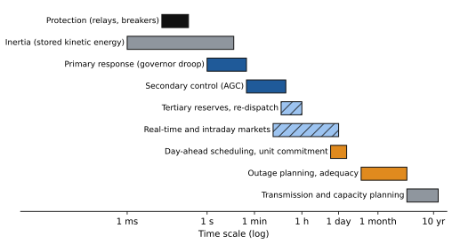
Inertia acts instantly and passively, as described above. Primary response follows within a few seconds: the speed governor on each generator senses the frequency fall and opens its steam valve, gate or fuel valve in proportion. The proportionality is set by the droop R, the fractional frequency change that would drive the unit from zero to full output; 4 to 5 % is typical. For a unit of rating Pr:
ΔP = −(Δf / f0) / R · Pr (3)
Load also helps a little: motors slow and draw less power as frequency falls, an effect called load damping. Primary response arrests the fall but leaves a steady offset. Secondary control, known in North America as automatic generation control (AGC), then restores frequency to nominal and brings power exchanges between control areas back to schedule over several minutes. Tertiary control and re-dispatch replace the reserves used, so that the system is ready for the next event. Above these sit the market and scheduling layers, outage planning, and the long-term planning of generation and transmission.
WORKED EXAMPLE 2 — Governor droop and the frequency offset
A 500 MW unit with 5 % droop sees frequency fall by 0.2 Hz. By (3), ΔP = (0.2/50)/0.05 × 500 = 40 MW of extra output.
If 150 GW of the fleet provides governor response (assumed), the same 0.2 Hz fall mobilises (0.2/50)/0.05 × 150 = 12 GW. The system's frequency response characteristic is β = 150/(0.05 × 50) + DS/f0 = 60 + 5 = 65 GW/Hz, taking load damping D = 1 % per % of frequency on 250 GW of load.
The 4 GW loss of Example 1 therefore settles, after primary response, at Δf = 4/65 = 0.062 Hz below nominal, about 49.94 Hz, until secondary control restores 50 Hz.
Figure 2 shows these layers working together in a simple single-area simulation of the same 4 GW loss. The steady offset is set by droop and damping and is the same for both cases; the depth of the initial dip, the nadir, depends on inertia. Halving inertia deepens the nadir and makes it arrive sooner, leaving the governors less time to respond.
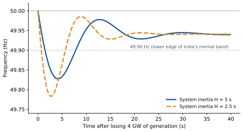
2.3 Voltage and reactive power
Frequency is a single system-wide quantity; voltage is local. It is governed mainly by reactive power, the oscillating component of power that magnetises transformers and motors and charges the capacitance of long lines. Reactive power does not travel far, so voltage must be controlled near where it is needed, by generator excitation systems, switched capacitors and reactors, on-load tap changers, static var compensators and STATCOMs. A lightly loaded long line generates reactive power and pushes voltage up; a heavily loaded line absorbs it and lets voltage sag. Voltage problems are less visible than frequency problems but just as dangerous: they were at the heart of the 2025 Iberian blackout (Section 6.6). As synchronous generators retire, their voltage-control capability must be replaced by other means.
Each system defines bands within which frequency is normally held and thresholds at which emergency actions begin. Table 2 compares a few. The bands differ because system sizes, generation mixes and histories differ, but the logic is the same everywhere: a narrow normal band maintained by markets and secondary control, wider limits for disturbances, and automatic load shedding as the last defence.
| System | Nominal | Normal operating band or limits | Automatic load shedding begins |
|---|---|---|---|
| India | 50 Hz | 49.90–50.05 Hz (IEGC band) [10] | Staged under-frequency relays below the band |
| Great Britain | 50 Hz | 49.5–50.5 Hz statutory range [11] | 48.8 Hz (first stage of LFDD) [11] |
| Texas (ERCOT) | 60 Hz | Close to 60 Hz; 59.4 Hz is a critical level for generator trips [12] | 59.3 Hz [13] |
| Continental Europe | 50 Hz | Standard range of about ±50 mHz | Staged from about 49.0 Hz |
WORKED EXAMPLE 3 — Why light load pushes voltage up
A lossless 400 kV line 400 km long, energised from one end with the far end open, behaves like a resonant transmission line. At 50 Hz the wavelength is about 6,000 km, so the electrical length is βl = 2π × 400/6,000 = 0.42 rad, and the receiving-end voltage rises by 1/cos(βl) − 1 = about 9.5 % (the Ferranti effect).
The line also generates about 0.55 Mvar/km of charging reactive power (assumed), some 220 Mvar in total, which must be absorbed by shunt reactors or generators. On a sunny, lightly loaded afternoon with few synchronous machines online, too little absorbing capability can let voltages climb across a whole region, the mechanism at the root of the 2025 Iberian collapse.
2.4 Security: the N−1 principle and protection
Grids are operated so that the loss of any single element, a generator, line or transformer, does not cause any other element to exceed its limits. This is the N−1 criterion. Operators run contingency analysis continuously, simulating each credible loss against the present state of the network estimated from telemetry, and re-dispatch generation pre-emptively if any contingency would cause an overload or voltage violation. Protection systems, relays and circuit breakers, isolate faulted equipment within tens of milliseconds. As a last line of defence, automatic under-frequency load shedding disconnects blocks of customers in stages if frequency falls below set thresholds, sacrificing part of the load to save the whole system.
WORKED EXAMPLE 4 — Sizing the reserve for the largest contingency
The reserve that can respond within seconds must at least cover the largest single credible loss. If that is a 6 GW HVDC bipole (assumed) in a 250 GW system, the requirement is 6 GW, 2.4 % of load, held as headroom on running units or as storage and demand response, at every moment of the year. As individual plants and links grow larger, so does this standing cost, which is one reason operators limit the size of single infeeds.
2.5 Power flow: electricity goes where physics sends it
In a meshed AC network, operators cannot route power along a chosen path. Power divides among parallel paths according to their impedances, following Kirchhoff's laws. A sale from one region to another therefore flows partly through neighbouring networks ("loop flows"), and a single heavily loaded line can limit transfers across a whole region. For the high-voltage network, where reactance dominates, the power flow on a line between buses i and j is approximately
Pij = (ViVj / Xij) sin(δi − δj) (4)
where V are the voltage magnitudes, Xij the line reactance and δ the voltage phase angles. Transfer rises with the angle difference until, near 90°, the two ends lose synchronism; long lines are operated well below that limit. This is the physics behind stability limits, series compensation and the controllability advantage of HVDC.
WORKED EXAMPLE 5 — Sharing between parallel lines
1,000 MW flows between two areas over two parallel lines with reactances of 0.1 and 0.2 per unit. Power divides in inverse proportion to reactance: line 1 carries 1,000 × 0.2/0.3 = 667 MW, line 2 carries 333 MW.
If line 1 is rated 600 MW, the transfer is limited to 900 MW even though the two lines together could carry far more. Installing 50 % series compensation on line 2 halves its reactance to 0.1; the flows become 500/500 MW and the full 1,000 MW, or up to 1,200 MW, can be transferred. Power-flow control devices and HVDC links achieve the same effect by direct control.
2.5 Restoration and black start
When a blackout does happen, the grid must be rebuilt from nothing. Most large power stations cannot start without electricity from the grid to run their pumps, fans and controls. Operators therefore keep a few "black-start" units, usually hydro, gas turbines or diesel-backed plants, able to start on their own, energise a transmission path, and supply the auxiliaries of larger stations. Islands are built up around each black-start source, carefully picking up blocks of load so that frequency and voltage stay within limits, and then synchronised with one another. Restoration plans are rehearsed in drills, because a real blackout leaves no time to invent them. Batteries with grid-forming inverters are increasingly being qualified as black-start sources, since they can energise a network within seconds.
WORKED EXAMPLE 6 — Starting a coal unit from a battery
A 500 MW coal unit needs auxiliary power of about 7 % of its rating while starting (assumed), mainly for feed pumps, fans and mills: 500 × 0.07 = 35 MW. A 50 MW grid-forming battery can therefore energise the connecting line and start the unit, provided it can also supply the inrush current of transformers and large motors, which can be several times their running current. Sizing black-start batteries is therefore about current and voltage control during switching as much as about energy.
3. A Brief History of Grid Management
3.1 Isolated stations and the battle of currents
The first public supply systems of the 1880s, such as Edison's Pearl Street station in New York (1882), were small DC networks serving a few city blocks. Because DC could not easily be transformed to high voltage, each station could serve only a radius of about a kilometre. The AC system, built on the transformer and the induction motor, won the "battle of the currents" in the 1890s, symbolised by the Niagara Falls hydroelectric scheme of 1895–96, because it could transmit power economically over long distances at high voltage and step it down for use. Grid management in this era meant a station engineer watching a few meters and adjusting a few machines by hand.
3.2 Interconnection and the first grids
From the 1910s to the 1950s, utilities interconnected their systems to share reserves and use the cheapest plants. Britain built one of the first national grids in the late 1920s and 1930s, operating at 132 kV under a central board. Interconnection brought the economics of scale but also the possibility of cascading failure across a wide area. The Northeast blackout of November 1965, which left about 30 million people in the United States and Canada without power, led directly to the creation in 1968 of the North American Electric Reliability Council, the forerunner of today's NERC, and to the voluntary reliability standards that later became mandatory.
3.3 Control centres and computers
The 1960s to 1980s brought supervisory control and data acquisition (SCADA), automatic generation control and, later, energy management systems (EMS) with state estimation and contingency analysis. For the first time operators could see the whole network in near real time and simulate the consequences of a failure before it happened. Economic dispatch, the allocation of load among units to minimise cost (Section 5.2), moved from slide rules to computers.
Transmission technology advanced alongside control. The first commercial HVDC link, to the Swedish island of Gotland, entered service in 1954 using mercury-arc valves; thyristor valves followed in the 1970s, and voltage-source converters in the late 1990s. AC transmission voltages rose to 765 kV in North America from the late 1960s. In the late 1980s, researchers developed the phasor measurement unit, which time-stamps voltage and current phasors using satellite clocks and is now the basis of wide-area monitoring.
3.4 Liberalisation and markets
From the 1980s, many countries separated generation from transmission and introduced competitive markets: Chile in 1982, England and Wales in 1990, the Nordic countries in the 1990s, and in the United States the independent system operators and regional transmission organisations created from the late 1990s. India's Electricity Act of 2003 opened generation to competition, created open access to the transmission network and established the regulatory commissions. Markets changed the operator's job: the cheapest dispatch is now discovered through bids rather than computed from cost curves, and reliability must be secured through rules, reserves and ancillary-service products rather than by direct ownership of the plants.
3.5 The digital and renewable era
Since about 2010, three changes have reshaped grid management: the rapid growth of wind and solar, the spread of digital measurement and communication (smart meters, synchrophasors, cloud-based forecasting), and the arrival of large-scale batteries. Each has made the grid more capable and more complex at the same time. Table 3 summarises the eras.
| Era | Typical span | Defining features | What "management" meant |
|---|---|---|---|
| Isolated stations | 1880s–1910s | DC and early AC, city-scale | Manual control by station staff |
| Interconnection | 1910s–1960s | Regional and national grids, 132–400 kV | Pooling reserves; telephone coordination |
| Control centres | 1960s–1990s | SCADA, AGC, EMS, contingency analysis | Computer-aided central dispatch; reliability councils |
| Markets | 1980s–2010s | Unbundling, wholesale markets, independent operators | Market rules, ancillary services, congestion pricing |
| Digital and renewable | 2010s–now | Wind, solar, batteries, smart meters, PMUs | Forecast-led, inverter-rich, active distribution |
3.6 India's own path
India's grid management developed along its own route. State electricity boards built and ran most of the system from the 1950s; regional electricity boards coordinated the states in each region from the 1960s. Central generation and transmission companies, NTPC (1975) and POWERGRID (1989), built the large plants and the inter-state network. A distinctive Indian innovation came in the early 2000s: Availability Based Tariff, with an "unscheduled interchange" charge that varied with frequency. A state that drew more than its schedule when frequency was low paid a high price, and one that helped the grid was paid, turning frequency into a price signal that improved discipline at a time of chronic shortage. The Electricity Act of 2003 introduced open access and competition, power exchanges began trading in 2008, and the regulatory framework has since added a deviation settlement mechanism, reserve ancillary services, a real-time market (2020), security-constrained economic despatch and, in 2023, a revised grid code. Table 4 lists the main milestones.
| Period | Milestone | Significance |
|---|---|---|
| 1948 onwards | State electricity boards | Integrated state utilities build most generation and networks |
| 1960s | Regional electricity boards | Coordination of states within five regions |
| 1975 / 1989 | NTPC / POWERGRID founded | Central generation and the inter-state transmission backbone |
| Early 2000s | Availability Based Tariff with frequency-linked unscheduled interchange | Frequency becomes a price signal; grid discipline improves |
| 2003 | Electricity Act | Open access, competition, independent regulators |
| 2008 onwards | Power exchanges; day-ahead market from 2009 | Short-term markets and price discovery |
| 2012 | July blackouts | Reforms in discipline, protection and system operation |
| Dec 2013 | Southern grid synchronised | One national grid at one frequency |
| 2020 | Real-time market | Half-hourly trading close to delivery |
| 2023 | Revised Indian Electricity Grid Code | Updated frequency band, reserves and connection rules |
| 2025–26 | Market coupling approved; storage moves to construction | Single clearing price; batteries enter operation at scale |
4. How Grids Are Organised Today
4.1 Roles and models
Every grid has the same functions, though different countries assign them to different bodies. Generators produce power. Transmission owners build and maintain the high-voltage network. A system operator, called a transmission system operator (TSO) in Europe, an independent system operator (ISO) or regional transmission organisation (RTO) in North America, and a load despatch centre in India, schedules and dispatches the system and keeps it secure in real time. Distribution companies own the low-voltage networks and, in many countries, sell to consumers. Regulators set tariffs and rules, and reliability bodies set technical standards. Two broad models exist. In the vertically integrated model, one utility, often state-owned, does most of these jobs in its territory. In the unbundled market model, generation competes, the network is a regulated monopoly, and an independent operator runs both the market and the grid. Most countries sit somewhere between the two.
4.2 United States
The contiguous United States has three largely separate AC interconnections, Eastern, Western and Texas (ERCOT), joined only by small DC ties. Within them, seven ISOs and RTOs run wholesale markets covering most of the country's load, while the Southeast and much of the West are still operated by vertically integrated utilities. The Federal Energy Regulatory Commission (FERC) regulates interstate transmission and wholesale markets, and NERC sets and enforces mandatory reliability standards. US markets are mostly "nodal": prices are calculated at thousands of points, so that transmission congestion appears directly in the price. The country's most visible grid problem is connection. Lawrence Berkeley National Laboratory counted 2,061 GW of generation and storage actively seeking interconnection at the end of 2025, down 10 % from a year earlier as many projects withdrew, and found that the median time from connection request to commercial operation exceeded five years for projects built in 2025 [6]. Figure 3 shows the composition of the queue.
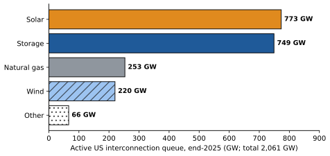
4.3 Europe
Continental Europe operates the largest synchronous AC area in the world by number of countries, coordinated through the European Network of Transmission System Operators for Electricity (ENTSO-E). Each country's TSO is responsible for its own control area, but network codes harmonise connection requirements, operation and balancing. Markets are "zonal", usually one price zone per country, and are coupled across borders by a common algorithm, the Single Day-Ahead Coupling, which allocates cross-border capacity and sets prices for all zones together. On 30 September 2025 the coupled day-ahead market moved from hourly to 15-minute trading intervals, so that prices and schedules follow the fast changes of solar and wind output more closely [14]. Europe has also moved first on requiring new storage to behave like a synchronous machine: an ENTSO-E technical report proposes making grid-forming capability mandatory for new storage above 1 MW under the revised generator connection code [15].
4.4 China
China's grids are run by two large state-owned companies, State Grid, which covers about 80 % of the country's territory, and China Southern Power Grid [16]. The defining feature is a backbone of ultra-high-voltage (UHV) lines, ±800 kV and above for DC and 1,000 kV for AC, carrying power from the coal, hydro, wind and solar resources of the west and north to the load centres of the east. By the end of 2025 China had completed 46 UHV projects, 22 AC and 24 DC, with more than 62,000 km of lines [17]. West-to-east transmission capacity reached 340 GW in 2025, meeting about 23 % of national peak demand, and State Grid's fixed-asset investment rose to a record of more than 650 billion yuan [18]. A further 15 UHV lines are planned for 2026–2030, raising cross-provincial transmission capacity by about 35 % [19]. China's model shows what centralised planning and finance can build quickly; its challenges include provincial market barriers and curtailment of renewables in resource-rich regions.
4.5 Australia
Australia's National Electricity Market (NEM), operated by the Australian Energy Market Operator (AEMO), is a long, thin network along the east coast with an energy-only market settled every five minutes. It has become a world laboratory for high renewable shares. Renewables supplied a record 78.6 % of NEM demand in a half-hour on 11 October 2025, with rooftop solar alone providing 51.3 % [20], and more than half of total energy in the December 2025 quarter, with an instantaneous peak of 91.1 % [21]. The flip side is "minimum system load": on sunny spring weekends rooftop solar drives grid demand so low that too few synchronous machines remain online to provide system strength and inertia. NEM operational demand fell to a record low of 9,666 MW on 4 October 2025 [22]. AEMO has responded with emergency backstop powers to curtail rooftop solar, synchronous condensers and grid-forming batteries: ten grid-forming battery sites totalling 1,070 MW were in operation in late 2025, with 94 more in the pipeline [23].
4.6 Other systems
Other large systems illustrate further variations. Brazil, dominated by hydropower spread over a continent, is run by a national system operator that optimises water use across reservoirs years ahead; it expanded its transmission system by more than 92,000 km in a decade, growing by more than 50 % [24]. South Africa shows the consequences of under-investment: years of rotating load shedding, which the IEA links in part to the lack of grid capacity to connect new renewable projects [25]. Japan operates two frequencies, 50 Hz in the east and 60 Hz in the west, a legacy of equipment bought from different countries in the 1890s, joined only by frequency-converter stations of limited capacity, a constraint felt sharply after the 2011 earthquake. Each case confirms that the institutional and physical structure inherited from the past shapes what operators can do today.
4.7 India in outline
India operates one of the world's largest synchronous grids, managed by Grid Controller of India Limited (Grid-India) through a national load despatch centre, five regional centres and state centres. Inter-state transmission is built mainly by POWERGRID and private developers under tariff-based competitive bidding, while distribution is largely in the hands of state-owned companies. India is treated in detail in Section 9. Table 5 compares the five systems.
| Feature | United States | Europe | China | Australia (NEM) | India |
|---|---|---|---|---|---|
| Frequency | 60 Hz | 50 Hz | 50 Hz | 50 Hz | 50 Hz |
| Structure | 3 interconnections; 7 ISOs/RTOs plus integrated utilities | One large synchronous area; national TSOs | Two state grid companies | One market, one operator | One national grid; national, regional and state despatch centres |
| Market design | Mostly nodal pricing; capacity markets in some ISOs | Zonal pricing; coupled day-ahead at 15-minute resolution | Provincial markets, largely planned dispatch | Energy-only, 5-minute settlement | Exchanges for day-ahead and real-time; long-term contracts dominate |
| Reliability body | NERC (mandatory standards) | ENTSO-E network codes | State Grid, China Southern, regulators | AEMO, AEMC, AER | CEA, CERC, Grid-India |
| Signature challenge | Connection queues; load growth from data centres | Voltage control; cross-border coordination | Long-distance transfer; curtailment | Minimum system load; system strength | Evening ramp; high frequency at midday; distribution finances |
5. Operating the Grid Day to Day
5.1 Forecasting and scheduling
Operation begins with forecasts: demand for each 15-minute block of the next day, wind and solar output from weather models, and the availability of each plant and line. From these, operators or markets produce a unit commitment, deciding which plants will be running and when, because large thermal units take hours to start. The schedule must leave enough reserve to cover forecast errors and the largest contingency (Example 4). As the share of weather-dependent generation grows, forecasting accuracy has become as important to reliability as the plants themselves.
5.2 Economic dispatch
Among the committed units, load is shared so that total cost is minimised. If each unit's cost Ci is a smooth function of its output Pi, the classical solution is that every unit not at a limit runs at the same incremental (marginal) cost λ:
dCi/dPi = λ for all units within limits, ΣPi = PD (5)
In a market, λ is the clearing price; in a cost-based system, it is computed by the despatch centre. India's merit-order despatch and its market-based economic despatch pilots are applications of the same principle.
WORKED EXAMPLE 7 — Equal incremental cost dispatch
Three units must supply 900 MW. Their marginal costs, in ₹/kWh with P in MW (assumed), are Coal A: 2.0 + 0.0020P (150–600 MW); Coal B: 2.4 + 0.0016P (100–500 MW); Gas C: 4.0 + 0.0030P (50–300 MW).
Solving (5): λ = ₹2.98/kWh, with Coal A at 488.9 MW and Coal B at 361.1 MW. Gas C stays at its 50 MW minimum because even its cheapest output costs more than λ.
Total variable cost is about ₹23.9 lakh per hour, against ₹28.2 lakh for an equal 300 MW split, a saving of about ₹4.3 lakh per hour. Across a national fleet, the same logic is worth thousands of crores a year, and is the reason operators want to schedule plants on a common, transparent merit order.
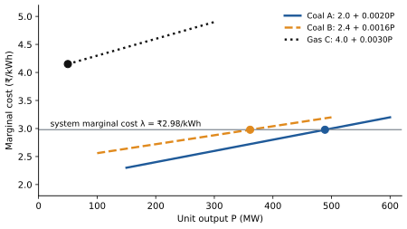
5.3 Balancing between areas
A large grid is divided into control areas, each responsible for its own balance. Secondary control acts on an area control error (ACE), which combines the deviation of the area's net exchange from schedule with its share of the frequency deviation. In the North American convention:
ACE = (NIA − NIS) − 10B(fA − fS) (6)
where NI is net interchange (actual and scheduled), B the frequency bias in MW per 0.1 Hz (negative by convention) and f the frequency. A positive ACE means the area is over-generating and should reduce output.
WORKED EXAMPLE 8 — Reading the area control error
An area is scheduled to export 1,000 MW but is exporting 1,300 MW, while frequency is 59.98 Hz against 60.00 Hz. Its bias is −150 MW per 0.1 Hz (assumed).
ACE = (1,300 − 1,000) − 10 × (−150) × (−0.02) = 300 − 30 = +270 MW. The area should cut generation by about 270 MW. It keeps 30 MW of its excess, because that is its fair share of supporting the low interconnection frequency.
5.4 Why transmission voltage matters
Transmission losses are proportional to the square of current. Since current falls in proportion to voltage for the same power, losses fall with the square of voltage. This is why long-distance lines run at 400, 765 kV or higher, and why the ultra-high-voltage networks of China and India exist.
WORKED EXAMPLE 9 — Losses at 220, 400 and 765 kV
Transmit 500 MW over 300 km at power factor 0.95 with a resistance of 0.03 Ω/km per phase (assumed, the same conductor in each case for simplicity).
At 220 kV: I = 500 × 106 / (√3 × 220 × 103 × 0.95) = 1,381 A; loss = 3I2R = 51.5 MW, 10.3 %.
At 400 kV: 760 A, 15.6 MW, 3.1 %. At 765 kV: 397 A, 4.3 MW, 0.85 %.
In practice, higher-voltage lines also use larger conductor bundles, so the real advantage is even greater. The limit at long distances is not loss but stability and reactive power, which is where HVDC takes over (Section 8.5).
5.5 The control room
A modern control room combines SCADA telemetry every few seconds, synchrophasor measurements many times a second, a state estimator that reconciles them into a consistent picture, contingency analysis that tests the effect of each credible outage, and tools for scheduling, outage coordination and restoration. The operators' discipline, following procedures, keeping situational awareness and acting early, remains decisive. Several of the blackouts in the next section began with tools that failed silently or with operators who could not see what was happening.
5.6 A contingency, minute by minute
The layers described in Section 2 come together in the first quarter of an hour after a major disturbance. Table 6 follows a hypothetical but typical event in a large 50 Hz system: the trip of a 4 GW HVDC import link at the evening peak.
| Time after trip | What happens | Who or what acts |
|---|---|---|
| 0–100 ms | Converter protection blocks the link; 4 GW of infeed is lost | Protection |
| 0–2 s | Frequency falls at about 0.1 Hz/s; rotating machines release kinetic energy | Inertia (automatic) |
| 0.2–1 s | Batteries on fast frequency response inject power | Fast frequency response |
| 2–10 s | Governors open valves; hydro gates move; frequency reaches its nadir | Primary response |
| 10–30 s | Frequency settles about 0.06 Hz low; flows on AC lines near the lost link rise | Primary response; load damping |
| 30 s–5 min | Secondary control raises output in the deficit area; interchange restored | AGC / secondary reserve |
| 1–15 min | Operators check contingency analysis; dispatch tertiary reserve; re-dispatch to relieve overloaded lines | Control room |
| 15 min onwards | Reserves replaced; schedules revised; event logged for investigation | Control room; markets |
If any layer fails, a cascade can begin: if too little primary reserve is available, frequency falls to the load-shedding thresholds; if the lost power reroutes onto lines that then overload and trip, the event spreads geographically; if voltage collapses in the receiving area, generators and loads disconnect. Operators' main job in this window is to keep the event from finding a second weakness.
5.6 Ancillary services
Besides energy, the system operator buys or mandates a set of "ancillary services" that keep the grid stable. Their names differ between countries, but the functions are common: fast frequency response, primary, secondary and tertiary reserves, voltage and reactive-power control, and black-start capability. India's framework has moved from regulated reserves dispatched by the operator to market-based procurement, with secondary and tertiary reserve ancillary services and voltage-control services recognised in the 2023 grid code [26]. Table 7 summarises the services.
| Service | Purpose | Activation | Typical providers |
|---|---|---|---|
| Inertia | Slow the initial rate of frequency change | Instant, passive | Synchronous machines; grid-forming inverters |
| Fast frequency response | Arrest frequency within about a second | < 1–2 s | Batteries; some loads |
| Primary reserve | Governor or droop response | Seconds to 30 s | Thermal, hydro, batteries |
| Secondary reserve | Restore frequency and interchange (AGC) | 30 s to 15 min | Hydro, gas, batteries, flexible coal |
| Tertiary reserve | Replace used reserves; re-dispatch | 15 min to hours | Any dispatchable resource; demand response |
| Voltage control | Hold voltages within limits | Continuous | Generators, STATCOMs, capacitors, inverters |
| Black start | Restart the system after collapse | Hours after blackout | Hydro, gas turbines, batteries |
5.7 Asset management and condition monitoring
A grid is also a fleet of ageing machines: power transformers, circuit breakers, cables, conductors and towers, many of them several decades old. Their failure, especially of a large transformer that may take up to four years to replace [7], is a reliability risk in its own right. Utilities increasingly manage assets by condition rather than by age, using dissolved-gas analysis of transformer oil, online bushing and partial-discharge monitoring, infrared thermography, breaker timing tests and drone or satellite inspection of lines. The most important single quantity for a transformer is the temperature of the hottest spot in its windings, because the cellulose insulation ages exponentially with temperature. Under IEC 60076-7, for ordinary paper insulation, the relative ageing rate is
V = 2(θh − 98)/6 (7)
where θh is the hot-spot temperature in °C: the ageing rate doubles for every 6 K above 98 °C (Figure 5).
WORKED EXAMPLE 10 — The cost of running a transformer hot
By (7), a hot-spot temperature of 104 °C gives V = 2; 110 °C gives V = 4; 116 °C gives V = 8.
A transformer run at a 110 °C hot spot for a whole day consumes four days of normal insulation life. A summer of afternoon overloads during heatwaves can therefore use months of life, unseen unless the hot spot is measured or calculated continuously. Monitoring lets operators overload transformers safely when the grid needs it, by trading a known amount of life for capacity, instead of either refusing the load or ageing the unit blindly.
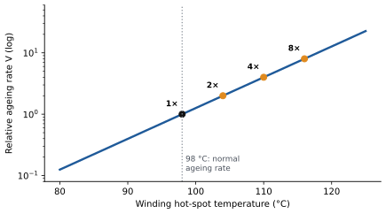
5.8 Planning for adequacy
Operation keeps today's grid secure; planning makes sure there will be enough capacity tomorrow. Because generators fail at random, adequacy is a probability problem. Planners combine the forced-outage rates of all units into a probability distribution of available capacity, compare it with forecast load hour by hour, and compute the loss-of-load probability (LOLP), the loss-of-load expectation in hours per year, and the expected energy not served. Reliability standards then set the acceptable level. As wind and solar grow, the same method must also include their weather-driven variability and the energy limits of storage, which is why adequacy studies now simulate thousands of weather years rather than one peak hour.
WORKED EXAMPLE 11 — Why one extra unit matters so much
A small system has identical 100 MW units, each with a forced-outage rate of 5 % (assumed), and a constant load of 400 MW. Load is lost whenever fewer than four units are available.
With five units, LOLP = P(two or more out) = 1 − 0.955 − 5 × 0.05 × 0.954 = 2.26 %, about 198 hours a year. With six units, LOLP = 0.22 %, about 19.5 hours; with seven, 0.019 %, about 1.7 hours (Figure 6).
Each additional unit of reserve reduces the expected shortfall by roughly a factor of ten. This steep curve is why reliability standards are expressed as probabilities, and why the value of the last increment of firm capacity, or of storage and demand response that can stand in for it, is so high.
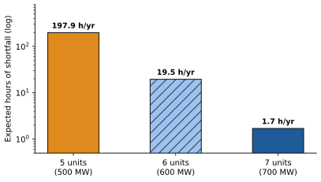
5.9 Distribution operation and reliability
Most interruptions that customers experience start not on the transmission grid but on local distribution feeders: a tree on an 11 kV line, a failed cable joint, a burnt distribution transformer. Utilities measure this with standard indices: the system average interruption frequency index (SAIFI), the average number of interruptions per customer per year; the system average interruption duration index (SAIDI), the average total minutes or hours without supply; and the customer average interruption duration (CAIDI = SAIDI/SAIFI). Feeder automation, with remotely controlled switches that isolate a faulted section and restore supply to the rest within minutes, is one of the most effective improvements.
WORKED EXAMPLE 12 — Reliability indices for a feeder
A feeder serves 2,000 customers. In a year it has three sustained outages: 1,200 customers for 2 h, 800 for 1.5 h, and all 2,000 for 4 h.
SAIFI = (1,200 + 800 + 2,000)/2,000 = 2.0 interruptions per customer. SAIDI = (1,200 × 2 + 800 × 1.5 + 2,000 × 4)/2,000 = 5.8 h. CAIDI = 2.9 h.
If sectionalising switches had halved the customers affected by the second and third outages (assumed), SAIDI would fall to 3.5 h, a 40 % improvement without any change in the number of faults.
6. Lessons From Major Blackouts
Large blackouts are rare, and each has a unique chain of causes. But their investigations, carried out with great care by operators and regulators, are the most valuable learning material the industry has. Six are summarised here and in Table 8.
6.1 North America, 14 August 2003
On a hot August afternoon, a series of 345 kV lines in northern Ohio sagged into trees and tripped. The alarm system in the responsible utility's control room had failed without the operators realising it, so they did not see the situation deteriorating, and the regional coordinators did not provide adequate support. The binational task force identified inadequate situational awareness and inadequate tree trimming among the causes [27]. Within about an hour the cascade had blacked out an area with about 50 million people and 61,800 MW of load in eight US states and Ontario [28]; some customers waited up to four days for power. The task force's recommendations led to mandatory, enforceable reliability standards in North America.
6.2 India, 30–31 July 2012
On 30 July 2012 the Northern grid collapsed, affecting more than 400 million people for about 13.5 hours; the next day the Northern, Eastern and North-Eastern grids collapsed together, affecting more than 620 million people across 22 states, about half of India's population [29]. The southern grid, then not synchronously connected to the rest, was unaffected [30]. The enquiry committees pointed to a stressed, weakened network with several lines out of service, heavy inter-regional flows from over-drawal by some states, and protection that operated on load encroachment rather than faults. The response reshaped Indian grid management: stricter enforcement of scheduling discipline, a stronger and more independent system operator, protection audits, and the synchronisation of the southern grid at the end of 2013 to create one national grid.
6.3 South Australia, 28 September 2016
Tornadoes with wind speeds of 190 to 260 km/h destroyed transmission towers [31], causing a series of voltage disturbances. Nine wind farms reduced output because their control settings limited the number of ride-through events they would tolerate in a short period, settings that AEMO had not known about. The resulting loss of generation overloaded the interconnector to Victoria, which tripped, and the whole state went black, affecting 850,000 customers [32], [33]. The lesson was that the hidden software settings of inverter-based plants matter as much as their nameplate ratings; Australia tightened its performance standards and verification accordingly.
6.4 Great Britain, 9 August 2019
A lightning strike on a transmission line was a routine event, but within seconds the Hornsea offshore wind farm and the Little Barford gas station both lost output, along with embedded generation on distribution networks. The total loss exceeded the reserve held, and frequency fell to 48.8 Hz, triggering automatic low-frequency demand disconnection of about 1 GW and leaving about 1.1 million customers without power for a period [11]. Rail services in south-east England were disrupted for hours. The two generators paid £4.5 million each into the regulator's redress fund [34].
WORKED EXAMPLE 13 — What load shedding buys
About 973 MW was disconnected to arrest the 2019 fall [35], affecting about 1.1 million customers: 973,000 kW / 1,100,000 = about 0.9 kW per customer, roughly an average household's afternoon load. Load shedding is blunt: it cuts whole feeders, and on that day it also disrupted rail services. Faster frequency response from batteries, which can act in under a second, aims to make such cuts unnecessary.
6.5 Texas, February 2021
Winter Storm Uri brought extreme cold to a system planned mainly for summer peaks. Gas wells and pipelines froze, generators of all types failed, and on 15 February frequency in ERCOT fell to 59.302 Hz [12], below 59.4 Hz for 4 minutes 23 seconds, close to the point where automatic protection would have caused a full collapse [36]. The operator ordered up to 20,000 MW of rolling outages, the largest manually controlled load shed in US history [37]. For over two days ERCOT averaged about 34,000 MW of generation outages, nearly half its all-time winter peak [38].
WORKED EXAMPLE 14 — The scale of Uri
At the worst point, 52,277 MW of ERCOT's 107,514 MW installed capacity was unavailable: 48.6 % [12]. ERCOT estimated that peak demand without load shed would have been about 76.8 GW [36]; the 20 GW shed was therefore about 26 % of the demand customers wanted. No reserve margin chosen for normal weather could have covered a common-mode failure of that size; the remedies were winterisation, gas-electric coordination and planning for extreme weather.
6.6 Spain and Portugal, 28 April 2025
At 12:32 on a spring day with high solar output, voltage in the Spanish system began to rise uncontrollably. Within about 90 seconds, generators tripped on overvoltage, Iberia lost synchronism with the rest of Europe, and by 12:33:29 the peninsula was completely black [39]. Some areas waited up to 16 hours for supply [40]. ENTSO-E's expert panel found failures across operation, generation and regulation, chiefly in voltage control and reactive-power management, with some overvoltage protections set below regulatory limits, and made 22 recommendations [41]. It stressed that there was no single cause and that renewables as such were not the problem; among its recommendations is that solar plants should take part in voltage control [40], [42]. Iberia illustrates the main new risk of inverter-rich grids: the services that synchronous machines provided automatically, here voltage regulation, must be deliberately specified, procured and verified.
| Event | Affected | Initiating events | Underlying causes | Main lessons |
|---|---|---|---|---|
| North America, Aug 2003 | ≈ 50 million people; 61.8 GW | Line contacts with trees in Ohio | Failed alarms; poor situational awareness; vegetation management | Mandatory reliability standards; operator tools and training |
| India, Jul 2012 | > 620 million people | Line trips on a weakened corridor | Over-drawal; stressed network; protection on load encroachment | Grid discipline; stronger system operator; one national grid |
| South Australia, Sep 2016 | 850,000 customers | Tornadoes destroyed towers | Undisclosed wind-farm ride-through settings; interconnector overload | Verify inverter settings; performance standards |
| Great Britain, Aug 2019 | ≈ 1.1 million customers | Lightning strike | Two near-simultaneous generator losses plus embedded generation | Fault ride-through compliance; faster reserves |
| Texas, Feb 2021 | 20 GW load shed over days | Extreme cold | Common-mode failures of gas and generation; no winterisation | Weatherisation; gas-electric coordination |
| Iberia, Apr 2025 | Mainland Spain and Portugal | Uncontrolled voltage rise | Weak voltage control; protection settings; regulatory gaps | Specify and procure voltage control from all plant |
Restoration. The events also show how much recovery depends on preparation. In India in 2012 supply was restored within about a day of each collapse, helped by hydro black-start units and support from the unaffected regions. Iberia in 2025 restored most supply within the day, using hydro black start and support from France and Morocco, though some areas waited up to 16 hours [40]. In Texas, by contrast, the problem was not restoring a collapsed grid but surviving days of insufficient supply. Restoration speed is a design choice: it depends on black-start capacity, practised plans and communication between operators, generators and distribution companies.
6.7 Other notable events
The six cases above are not the whole record. Table 9 lists other events that shaped practice, from the 1965 Northeast blackout that created NERC to the 2015–2016 cyber attacks on Ukrainian distribution networks and the 2024–2026 data-centre load losses in Virginia (Section 7.10). The pattern of hidden weakness and layered failure recurs in almost every case.
| Event | Scale | What it taught |
|---|---|---|
| Northeast US and Canada, Nov 1965 | ≈ 30 million people | Need for coordinated reliability rules; led to NERC (1968) |
| New York City, Jul 1977 | ≈ 9 million people | Lightning, protection failures and operator overload; social cost of long outages |
| Northern India, Jan 2001 | ≈ 230 million people | Weak inter-regional coordination before the 2003 reforms |
| Continental Europe, Nov 2006 | System split into three areas; ≈ 15 million households | Coordination of planned line switching across TSOs |
| Southwest US, Sep 2011 | ≈ 2.7 million people | Situational awareness across utility boundaries |
| Ukraine, Dec 2015 and 2016 | Hundreds of thousands of customers | Cyber attacks can switch off distribution networks |
| Argentina and Uruguay, Jun 2019 | Whole national systems | Defence schemes and protection coordination |
| Virginia, 2024–2026 | 1.5–4 GW of data-centre load lost in single events | Large loads need ride-through requirements |
Three threads run through all six cases. First, cascades exploit hidden weaknesses: a failed alarm, an undisclosed setting, a protection relay set too sensitively. Second, the grid's defences are layered, and each blackout happened when several layers failed at once. Third, recovery depends on preparation: black-start capability, restoration plans and practised operators turned some of these events into hours rather than days.
7. Current Problems
7.1 Demand is growing again
For about a decade before 2020, electricity demand in advanced economies was nearly flat. That has ended. The IEA expects global power demand to grow by more than 3.5 % a year on average for the rest of this decade [43], and the 2026 mid-year update raised the near-term forecast to 3.6 % in 2026 and 3.8 % in 2027 [1]. The drivers are broad: industry, air conditioning in hot and increasingly prosperous countries, electric vehicles, heat pumps and data centres. Demand growth is welcome, because electricity is replacing less efficient fuels, but it arrives faster than grids are being built, and much of it is concentrated in hot afternoons and evenings when grids are already stressed.
7.2 Grids have become the bottleneck
The IEA's first global stocktake of grids found at least 3,000 GW of renewable projects waiting in connection queues, 1,500 GW of them at an advanced stage, about five times the solar and wind capacity added worldwide in 2022 [2]. In the United States, the queue peaked at nearly 2,600 GW at the end of 2023 before reforms and withdrawals reduced it [44], and still stood at 2,061 GW at the end of 2025, with a median of more than five years from request to operation [6]. A wind or solar farm can be built in one to five years, while a major transmission line commonly takes much longer to plan, permit and build [24]. Investment is rising, from about $315 billion in 2015 to about $450 billion in 2025 [4] and an estimated $550 billion in 2026 [5], but the IEA estimates that annual grid investment must rise by about half by 2030 from roughly $400 billion to keep pace with demand [45].
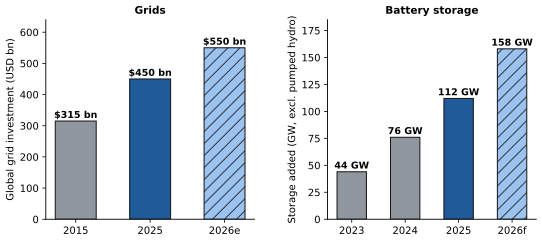
7.3 Equipment and supply chains
Even when a project is approved, the equipment may not be available. An IEA survey found that it now takes two to three years to procure cables and up to four years to secure large power transformers, that average lead times for both have almost doubled since 2021, and that waiting times for HVDC cables exceed five years; prices have risen substantially as well [7]. Permitting remains the main cause of delay in advanced economies, but supply is now a constraint in its own right. Transformers, switchgear and cables are built in a limited number of factories with specialised skills, and capacity cannot be expanded overnight.
7.4 Falling inertia and system strength
Wind turbines, solar inverters and batteries are connected through power electronics. In their common "grid-following" form, they measure the grid voltage and inject current in step with it; they contribute no stored rotating energy and little fault current. As they displace synchronous machines during sunny or windy hours, system inertia falls, RoCoF after a loss rises, and the short-circuit strength that protection relays and inverter controls depend on weakens.
WORKED EXAMPLE 15 — Inertia as the synchronous share falls
Take the 250 GW system of Example 1, with synchronous machines of H = 5 s and grid-following converters contributing none (assumed).
With 80 % of load served by synchronous machines, effective H = 4.0 s and the RoCoF for a 4 GW loss is 0.10 Hz/s. At 50 %, H = 2.5 s and RoCoF = 0.16 Hz/s. At 30 %, H = 1.5 s and RoCoF = 0.27 Hz/s, enough to trip older RoCoF-based protection and to push the nadir below the first stage of load shedding unless faster response is available (Figure 8).
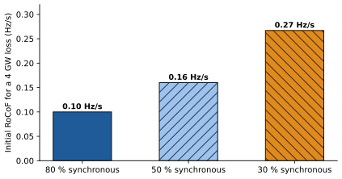
Low system strength brings a further, less familiar problem: control interactions. Inverters, HVDC converters and their control loops can interact with each other and with series-compensated lines, producing oscillations at frequencies from a few hertz to several hundred hertz that conventional models and protection do not capture. Such sub-synchronous and control-interaction oscillations have been observed in several renewable-rich regions around the world. Detecting them requires high-resolution measurements, such as PMUs and disturbance recorders, and studying them requires detailed electromagnetic-transient models of each plant, which operators increasingly demand as a condition of connection.
7.5 Variability, ramps and the duck curve
Solar output rises in the morning, peaks at midday and disappears in the evening just as household demand rises. The demand that conventional plants must meet, the "net demand", therefore sags at midday and climbs steeply in the evening, the shape known as the duck curve (Figure 9). India's operator has reported an evening ramp of nearly 60 GW [10]. At midday the opposite problem appears: too much generation, high frequency and curtailment, because coal units cannot reduce output below a technical minimum without risk.
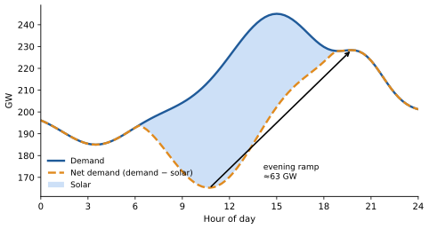
WORKED EXAMPLE 16 — How steep is a 60 GW evening ramp?
If net demand rises 60 GW over about three hours, the average ramp is 20 GW/h, or 333 MW per minute, sustained for three hours, with steeper stretches within it.
A coal fleet of 180 GW online that can ramp at 1 % of capacity per minute (assumed) could in principle deliver 1,800 MW per minute. The binding constraint is therefore not ramp rate but headroom: the fleet must be running, below its maximum, at the moment solar fades. Every gigawatt held back at midday for this purpose displaces cheaper solar, which is why storage that charges at noon and discharges at dusk is so valuable.
WORKED EXAMPLE 17 — The cost of curtailment
On 25 May 2025, India's operator curtailed nearly 10 GW of solar through emergency down-regulation while backing the thermal fleet down to about 58 % [10]. If 10 GW is curtailed for three hours, 30 GWh of zero-fuel-cost energy is lost, enough for about six million households at 5 kWh per day (assumed). Storage, flexible demand and lower thermal minimum loads all turn this waste into supply.
7.6 Voltage control and visibility of distributed resources
Iberia showed that voltage control can fail quietly. Large rotating generators regulate voltage automatically; inverter-based plants can do so too, often better, but only if their grid codes require it, their settings are correct and the operator can see and dispatch them. Rooftop solar and small batteries on distribution networks add another layer: they are numerous, mostly invisible to the transmission operator, and they respond to disturbances according to settings in millions of devices. The Iberian report and AEMO's work both emphasise visibility and control of distributed resources as a reliability priority [41], [47].
7.7 Extreme weather and resilience
Uri in Texas, heatwaves in India and wildfires in California and Australia show that weather beyond historical design ranges is now a planning case, not a remote possibility. Heat raises demand and lowers the capacity of lines, transformers and thermal plants at the same time; cold freezes fuel supplies; storms destroy towers. Reliability planning based on average or historical weather underestimates these common-mode risks.
7.8 Distribution: losses and finances
In many developing countries the weakest link is not the transmission grid but the distribution utility: high technical and commercial losses, tariffs below cost, delayed subsidy payments and under-investment in local networks. India's case is described in Section 9.7. Without financially viable distribution companies, the money to pay for generation, storage and transmission does not flow.
7.9 Cyber security and digital risk
Grid control has become digital, networked and, in places, cloud-connected. That brings better visibility but also a larger attack surface, as attacks on distribution networks in Ukraine in 2015 and 2016 demonstrated. Cyber security now ranks alongside physical security in reliability standards.
7.10 Large new loads
Grids were designed with loads that are many, small and diverse. Large data centres, crypto-mining facilities and electrolysers break that assumption: a single campus can draw hundreds of megawatts, and its power electronics may disconnect it from the grid within milliseconds of a voltage dip. In July 2024 a 230 kV line fault in northern Virginia caused about 1,500 MW of data-centre load, spread over 60 load points and 25 substations, to switch simultaneously to backup supplies; operators had not anticipated it, and system voltage rose beyond normal levels [48], [49]. Similar events followed in February 2025 (about 1,800 MW) and on 22 July 2026, when nearly 4,000 MW of data-centre load in Virginia tripped in two waves, the largest such event in PJM's history [50]. ERCOT has recorded 25 load-loss events of 100 to 400 MW from crypto-mining facilities [49]. Grid codes are now being extended to require large loads to ride through disturbances, as generators have long been required to do.
WORKED EXAMPLE 18 — When 1.5 GW of load vanishes
Consider a 60 Hz interconnection with 600 GW online and H = 4 s (assumed). A sudden 1.5 GW load loss gives, by (2), an initial RoCoF of 1.5 × 60 / (2 × 4 × 600) = 19 mHz/s, upwards. With half the fleet on 5 % droop and 1 % load damping, β ≈ 110 GW/Hz and the frequency settles only about 14 mHz high.
The frequency effect in a large interconnection is small, which is why the 2024 event did not cause concern on frequency [51]. The real problem is local: the sudden loss of 1.5 to 4 GW in a small area raises voltage sharply, as Iberia showed is dangerous, and the load then returns as abruptly when the backup systems hand back. Ride-through requirements and models of large-load behaviour are the remedy.
Data and transparency. Many of the problems above are made worse by poor data: queues full of speculative projects, unknown inverter settings, unmetered distribution feeders and load forecasts that miss heatwaves. Publishing operational data, as Grid-India, AEMO and European operators increasingly do, allows researchers, developers and regulators to see where the system is stressed and to propose solutions. Good data is a public good for grid reliability.
7.11 Affordability
Every remedy in this paper costs money, and in the end consumers pay. Network charges are a growing share of electricity bills in many countries because grids are being expanded and renewed at the same time, while equipment prices have risen [7]. In India, cross-subsidies from industry to agriculture and households, and delays in state subsidy payments, have historically weakened distribution companies and raised industrial tariffs. Affordable grids therefore depend on choosing the cheapest adequate solution, often a grid-enhancing technology, storage or demand response rather than a new line, and on spreading costs fairly between those who cause them and those who benefit.
7.12 Market signals and investment
Markets designed for fuel-burning plants pay mainly for energy. As more energy comes from sources with near-zero running cost, prices fall at midday and spike at scarcity, and revenues for the flexibility, inertia, voltage support and firm capacity that the system needs may not be enough to finance them. Many countries are adding capacity mechanisms, ancillary-service markets and storage obligations. Table 10 summarises the problems of this section.
| Problem | Symptom | Where it is most acute | Main remedies |
|---|---|---|---|
| Demand growth | Rising peaks, tight reserve margins | India, China, US (data centres), Middle East | Generation, storage, efficiency, demand response |
| Connection queues | Years of delay for new plants | US, Europe, Australia | Transmission build-out; connection reform; GETs |
| Supply chains | Transformer and cable lead times doubled | Worldwide | Standardised designs; long-term orders; local manufacturing |
| Low inertia and system strength | High RoCoF; weak fault levels | Australia, Ireland, GB, Iberia, increasingly India | Grid-forming inverters; synchronous condensers |
| Ramps and minimum load | Evening ramps; midday high frequency; curtailment | India, California, Australia | Storage; flexible thermal; demand shifting |
| Voltage control | Over- and under-voltage events | Iberia; long lines in India | Reactive-power procurement; STATCOMs; inverter voltage control |
| Extreme weather | Common-mode outages | Texas, Indian heatwaves, Australia | Weatherisation; resilience planning; diversity |
| Distribution weakness | Losses; unpaid bills | India, Africa, parts of Latin America | Metering; tariff reform; network investment |
| Cyber risk | Attacks on control systems | Worldwide | Segmentation; monitoring; standards |
8. Tools Available Now
8.1 Grid-enhancing technologies
Grid-enhancing technologies (GETs) increase the capacity of existing lines quickly and cheaply: dynamic line rating, advanced high-capacity conductors for reconductoring, power-flow controllers and topology optimisation. The IEA notes that most of them can be deployed with relatively short lead times, either replacing conventional investment or bridging the years until new lines are built [45].
Dynamic line rating is a good example of instrumentation solving a capacity problem. A line's limit is set by the temperature its conductor may reach before sagging too close to the ground. Static ratings assume conservative weather: high ambient temperature, full sun and a low wind speed. Real wind is usually stronger, and wind cools the conductor powerfully.
WORKED EXAMPLE 19 — Ampacity against wind speed
Take a 28 mm ACSR conductor (similar to "Drake", AC resistance 8.7 × 10−5 Ω/m at 75 °C), ambient 40 °C, full sun, emissivity and absorptivity 0.5 (all assumed). A steady-state heat balance, I2R + solar gain = convective + radiative loss, with a standard forced-convection correlation gives:
Wind 0.6 m/s (a typical static-rating assumption): 784 A. 1 m/s: 906 A. 2 m/s: 1,106 A (+41 %). 4 m/s: 1,353 A (+73 %).
Measuring conductor temperature, sag or local weather on critical spans lets the operator use this hidden capacity on most days, and fall back to the static rating when conditions are unfavourable (Figure 10).
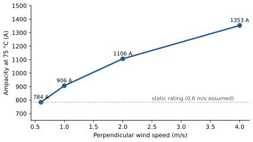
8.2 Battery storage
Batteries have become the fastest-growing grid resource. BloombergNEF reports 112 GW and 307 GWh of energy storage added worldwide in 2025, 48 % more than in 2024, with annual additions rising from 10 GW to over 100 GW in only four years [8], and forecasts 158 GW in 2026 [52]. China installed 61.1 GW in 2025 and the United States about 18 GW [52]. The IEA attributes the growth to a fall in battery costs of more than 90 % between 2010 and 2025 [53]. Batteries shift solar energy into the evening, provide frequency response within a fraction of a second, relieve congested lines and defer network upgrades.
8.3 Grid-forming inverters and synchronous condensers
A grid-forming inverter sets its own voltage waveform, like a synchronous generator, rather than following the grid's. It can therefore provide synthetic inertia, system strength and voltage control, and can operate in a weak grid or even start one. Australia leads in deployment, and Europe is moving to require the capability for new storage [15], [23]. Where fault current and inertia from real rotating mass are needed, synchronous condensers, large motors spinning without a prime mover, are being installed, sometimes by converting retired generators.
WORKED EXAMPLE 20 — Synthetic inertia from a grid-forming battery
A 1,000 MW grid-forming battery fleet configured to emulate an inertia constant of 4 s on its rating (assumed) provides 1,000 × 4 = 4,000 MW·s of equivalent stored energy, the same as about 1 GW of synchronous plant with H = 4 s. Because the battery's power can change within milliseconds, it can also deliver fast frequency response far quicker than any governor, so in practice its stabilising value exceeds its nominal inertia. The constraint is that the inverter must have headroom in current and energy to respond, so it cannot be run flat out.
WORKED EXAMPLE 21 — Lowering the technical minimum of coal units
Suppose 200 GW of coal capacity must stay synchronised through the day to be available for the evening ramp (assumed). At a technical minimum of 55 % it cannot go below 110 GW; at 40 % it can go down to 80 GW. The difference, 30 GW, is room for midday solar that would otherwise be curtailed or would push frequency up. Achieving it needs boiler and mill modifications, operator training and, crucially, compensation for the higher heat rate and wear at low load, which is why commercial and regulatory reform must accompany the technical work [10].
8.4 Flexible AC transmission and reactive-power devices
Static var compensators, STATCOMs and series compensation (collectively FACTS devices) control voltage and power flow on AC networks within cycles. They raise the stable transfer limit of long lines, damp oscillations and provide the dynamic voltage support whose absence was felt in Iberia.
8.5 HVDC
High-voltage direct current links have no reactive-power or synchronous-stability limit, so they can carry very large power over very long distances or under the sea, and their converters control the flow precisely. Their converter stations are expensive, so AC is cheaper over short distances and DC over long ones.
WORKED EXAMPLE 22 — Moving 3 GW over 1,500 km
HVDC: a ±800 kV bipole carries I = 3,000/(2 × 0.8) = 1,875 A per pole. With 0.0075 Ω/km per pole (assumed bundle), line loss = 2I2R = 79 MW; adding 0.7 % at each converter station (assumed) gives a total of 4.0 %.
AC: two 765 kV circuits each carry 1,155 A; with 0.0125 Ω/km per phase (assumed), loss = 5.0 %, before the series compensation and intermediate substations that a 1,500 km AC corridor would need for stability.
The loss difference is modest; the decisive advantages of DC at this distance are controllability, fewer lines and freedom from AC stability limits. That is why China's west-to-east corridors and India's long inter-regional links use HVDC (Figure 11).
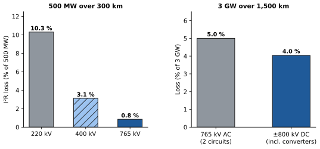
Protection for inverter-rich grids. Conventional distance and overcurrent protection relies on the large fault currents that synchronous machines supply, typically several times rated current. Inverters limit their fault current to little more than their rating, so faults in areas dominated by inverter-based resources may be harder to detect and locate. Protection engineers are responding with differential and communication-assisted schemes, adaptive settings that change with the generation mix, and grid-forming inverters designed to supply controlled fault current. Every new class of resource connected to the grid needs its protection behaviour modelled and tested, the lesson of South Australia in 2016 and Iberia in 2025.
8.6 Demand response and flexible load
Many loads can shift in time without loss of service: water pumping, cold storage, electric-vehicle charging, industrial processes, heating and cooling with thermal storage, and, increasingly, data-centre computing. Time-of-day tariffs, direct load control and aggregators that combine many small loads into a "virtual power plant" turn this flexibility into a grid resource. Demand response is usually the cheapest flexibility available, but it needs metering, communication and tariffs that reward it.
8.7 Microgrids and islanding
Not every part of the grid needs to fall when the bulk system does. Microgrids, local networks with their own generation and storage that can disconnect from the main grid and keep running, protect hospitals, military bases, data centres, campuses and remote communities. Utilities are also planning "intentional islanding", in which parts of the distribution network continue to operate on local solar and batteries during a wide-area outage. Islanding requires grid-forming sources, protection that works in both connected and islanded modes, and careful resynchronisation, but it turns distributed resources from a source of risk into a source of resilience.
8.8 Wide-area monitoring and digital operations
Phasor measurement units, sampling voltage and current many times a second with precise GPS time stamps, let operators see oscillations and stress across the whole network in real time. Combined with better weather forecasts, machine-learning forecasts of load and renewable output, and network models that are kept continuously up to date (digital twins), they move control rooms from reacting to anticipating. Table 11 summarises the tools.
| Tool | What it does | Lead time | Addresses |
|---|---|---|---|
| Dynamic line rating | Uses real conductor conditions to raise ratings | Months | Congestion; connection delays |
| Reconductoring | Replaces conductors with high-capacity types on existing towers | 1–3 years | Congestion; right-of-way limits |
| Battery storage | Shifts energy; fast frequency response; congestion relief | 1–2 years | Ramps; curtailment; reserves |
| Grid-forming inverters | Synthetic inertia, voltage and system strength | With new plant | Low inertia; weak grids |
| Synchronous condensers | Real inertia and fault current | 2–3 years | System strength |
| STATCOM, SVC, series compensation | Dynamic voltage and flow control | 2–3 years | Voltage control; transfer limits |
| HVDC | Long-distance, controllable transfer | 5–8 years | Bulk transfer; interconnection |
| Demand response, VPPs | Shifts and curtails load | Months | Peaks; ramps; reserves |
| PMUs, forecasting, digital twins | Visibility and prediction | Months to years | Situational awareness |
9. India: Managing One of the World's Fastest-Growing Grids
9.1 From five regional grids to one
India's grid grew as five regional systems, Northern, Eastern, Western, North-Eastern and Southern, each with its own frequency and only asynchronous or limited links between them. The regions were progressively synchronised over the 2000s, and the connection of the Southern grid at the end of 2013 created a single national synchronous grid operating at one frequency, a programme known as "One Nation, One Grid, One Frequency". The national system operator, formerly POSOCO and now Grid Controller of India (Grid-India), runs the national and regional load despatch centres, while state load despatch centres manage intra-state networks. The 2012 blackouts (Section 6.2) were a turning point: since then, scheduling discipline, protection audits, a strong system operator and a rapidly growing transmission network have kept India free of a grid collapse of that scale.
9.2 Demand and supply in 2026
India's peak demand keeps setting records. It reached 243.27 GW in September 2023 and 250 GW in May 2024 [54], 256.1 GW on 25 April 2026 [55] and 270.8 GW in May 2026 [9]. In the April 2026 heatwave actual peak demand ran 16 GW above the operator's weekly projection, and in non-solar hours there were shortages of 5.4 and 4.2 GW on two consecutive days even though the daytime peak was fully met [56]. Installed capacity was about 552 GW at the end of July 2026, of which 300.5 GW, more than 54 %, was non-fossil: 164.59 GW solar, 58.14 GW wind, 57.24 GW hydro, 11.75 GW bio-power and 8.78 GW nuclear [57], [58]. A record 55.29 GW of non-fossil capacity, including 44.6 GW of solar, was added in 2025–26 [57], and variable renewable generation reached an all-time high of 103.7 GW in July 2026, 75 GW of it solar [9].
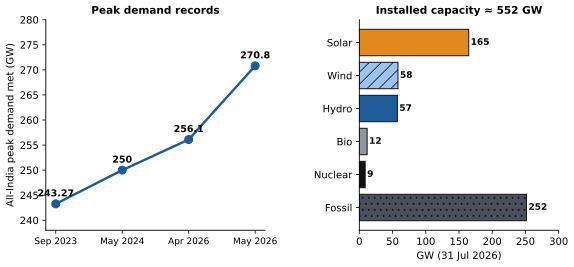
The structure of the problem is now clear. Capacity is ample by nameplate, but much of it is solar, so the daytime peak is relatively easy to meet and the evening, after sunset, is the hard part. India's grid must manage a steep evening ramp, high frequency and curtailment at midday, and adequate supply in the non-solar hours, all at once.
WORKED EXAMPLE 23 — Who met the 256 GW peak?
At the record peak of 256.1 GW at 15:38 on 25 April 2026, solar supplied 21.5 % [59]: 0.215 × 256.1 = about 55 GW. Gas supplied only about 2 % from 4.9 GW online [56]. Most of the remaining 200 GW came from coal, with hydro, wind and nuclear.
Four hours later, after sunset, that 55 GW of solar was gone while demand stayed high. The shortages of 4 to 5 GW in non-solar hours on those days [56] show exactly where India's reliability margin is thinnest: not at the headline peak, but in the evening.
9.3 Frequency management
The Indian Electricity Grid Code sets a normal operating band of 49.90 to 50.05 Hz. Grid-India's target for 2024–25 was to keep frequency within this band 90 % of the time [60]. Actual performance has been lower as solar has grown, mainly because of high frequency at midday. In January 2026, frequency was within the band 78.26 % of the time, above 50.05 Hz 17.16 % and below 49.90 Hz 4.58 %, ranging from 49.58 to 50.35 Hz (Figure 13) [61]. On 39 days in the second half of 2024–25, frequency was above the band for more than 20 % of the day, and instantaneous variable-renewable penetration had reached about 37 % [62]. On 25 May 2025 the operator backed the thermal fleet down to about 58 % and curtailed nearly 10 GW of solar, yet frequency still rose to 50.48 Hz; progress towards a 55 % technical minimum for coal units is being held back by commercial and regulatory factors [10].
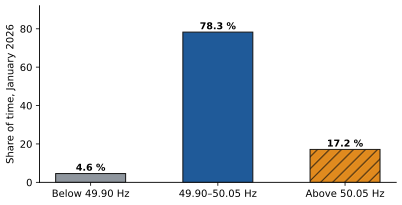
WORKED EXAMPLE 24 — Hours outside the band
January has 744 hours. Outside the band 21.74 % of the time means about 162 hours, of which 128 hours were above 50.05 Hz and 34 hours below 49.90 Hz. Meeting the 90 % target would mean no more than 74 hours outside the band, so the excess is about 88 hours a month, mostly sunny middays when there is more generation than the system can absorb.
The problem is not new. On 4 August 2024 frequency stayed above the 50.05 Hz limit for 26.27 % of the day, with an average of 50.032 Hz, prompting Grid-India to publish a report on high-frequency operation [63]. High frequency is the visible symptom of a system that cannot reduce conventional output fast or far enough when solar is plentiful and demand is moderate.
9.4 Markets and scheduling
India's short-term electricity markets have grown steadily since the first power exchange opened in 2008: a day-ahead market from 2009, a real-time market in 2020 and a green term-ahead market in 2021 [64]. One exchange has held most of the volume, so prices could differ between exchanges. In July 2025 the regulator approved the phased coupling of exchanges, beginning with the day-ahead market, so that bids from all exchanges are matched centrally to a single clearing price [65]; in April 2026 it issued draft regulations proposing Grid-India as the sole market coupling operator for the day-ahead and real-time markets [66]. Coupling is a step towards market-based economic despatch across the country, the Indian counterpart of the equal-incremental-cost principle of Section 5.2.
9.5 Transmission
India's National Electricity Plan for transmission sets out an expansion of the network from 4.85 lakh circuit-kilometres (ckm) in 2024 to 6.48 lakh ckm by 2032, with inter-regional transfer capacity rising from 119 to 168 GW, nine new HVDC links totalling 33.25 GW in addition to 33.5 GW in service, and an investment of ₹9.15 lakh crore, to meet a projected peak of 458 GW by 2032 [67]. The plan provides for 47 GW of battery storage and the evacuation of 280 GW of variable renewable energy through the inter-state system by 2030 [67], [68]. By June 2026 the network had reached about 5.09 lakh ckm, after 35,172 ckm were commissioned between 2023–24 and 2025–26 [69].
WORKED EXAMPLE 25 — Is the build rate fast enough?
Recent pace: 35,172 ckm in three years = about 11,700 ckm per year.
Required pace: from 5.09 to 6.48 lakh ckm between mid-2026 and 2032, that is 1.39 lakh ckm in about six years, or about 23,200 ckm per year. The build rate must roughly double, at a time when transformers and cables are in short global supply (Section 7.3). Right-of-way and forest clearances, traditionally the slowest steps, will decide whether it is achieved. Grid-enhancing technologies and storage can buy time on the most congested corridors.
9.6 Storage
India's storage sector is moving from tenders to commissioning. As of June 2026, commissioned storage was about 10.3 GW: 7.4 GW (36 GWh) of pumped hydro and 2.9 GW (8.3 GWh) of batteries, with a pipeline of more than 100 GW [70]. About 8.2 GWh of batteries were added in the first half of 2026 alone, compared with under 0.1 GWh a year earlier [71]. The targets for 2030 are about 41.65 GW of batteries and 18.98 GW of pumped hydro [72]. Policy support includes viability-gap funding, energy storage obligations and waivers of inter-state transmission charges [73].
WORKED EXAMPLE 26 — Storage for a quarter of the evening ramp
If batteries are to cover 25 % of a 60 GW evening ramp for four hours: power = 15 GW; energy = 15 × 4 = 60 GWh.
That is about 7.2 times India's battery energy commissioned by June 2026 (8.3 GWh), but of the same order as the 2030 target of about 42 GW. Each such battery charged from midday solar that would otherwise be curtailed (Example 17) also lowers frequency at midday and relieves the coal fleet of the need to hold back capacity for the evening.
India also has hydro and pumped-storage resources in the Himalayan and Western Ghats regions and growing cross-border links. Electricity trade with Bhutan, Nepal and Bangladesh continued even at the April 2026 peak [59], and hydro from Bhutan and Nepal provides valuable evening and monsoon energy. Pumped-storage projects, which can run for six to ten hours, complement batteries that are economic for two to four.
9.7 Distribution
Distribution remains the financial weak point. Aggregate technical and commercial (AT&C) losses fell from 22.6 % in 2013–14 to about 15 % in 2024–25 [74]; the Ministry of Power reports 21.91 % in 2020–21 falling to 16.16 % in 2024–25, with little improvement since 2023, against a target of 12 to 15 % under the Revamped Distribution Sector Scheme (RDSS) [75]. Distribution companies together posted a profit of ₹2,701 crore in 2024–25, against a loss of ₹25,553 crore a year earlier [76]. About 6.13 crore smart meters had been installed across all schemes, against 20.33 crore sanctioned under RDSS [77].
WORKED EXAMPLE 27 — What a point of AT&C loss is worth
Assume 1,500 TWh a year enters distribution networks and the average realisable tariff is ₹6/kWh (both assumed, for order of magnitude). One percentage point of AT&C loss is then 15 TWh, worth about ₹9,000 crore a year. The 7.6-point fall since 2013–14 is worth of the order of ₹68,000 crore a year at these assumptions, which explains much of the improvement in discom finances. Metering, billing discipline and feeder-level energy accounting remain the cheapest grid investment India can make.
9.8 A state view: Tamil Nadu
Tamil Nadu shows the national pattern in miniature. Its peak demand reached a record 21,724 MW on 14 July 2026, driven by heat and cooling demand [78]. With 12,273 MW of wind capacity, the second largest in India, wind and solar together met more than 40 % of the state's demand on some monsoon days [79]. The state must therefore balance strong seasonal wind, a daily solar cycle and heat-driven evening peaks, which makes storage, flexible thermal plants and inter-state transmission central to its planning.
9.9 Priorities for India
Five priorities follow from this analysis. First, storage at scale, commissioned on time, sited where it relieves both the evening ramp and congestion. Second, flexibility from the existing coal fleet, with technical minimum loads lowered and compensated, so that midday solar is not curtailed. Third, transmission at double the recent build rate, supported by dynamic line rating and reconductoring on congested corridors. Fourth, voltage and inertia services specified and procured explicitly as the synchronous share falls, including grid-forming requirements for new inverter-based plants and storage. Fifth, continued distribution reform, because a financially healthy distribution sector is the foundation on which everything else is paid for.
9.10 What India can learn from others, and teach
India can borrow tested solutions. Australia's experience with minimum system load, emergency backstops for rooftop solar and grid-forming batteries is directly relevant as India's rooftop solar grows. Europe's 15-minute market resolution and cross-border market coupling offer a model for India's coupled exchanges. The United States' interconnection reforms and cluster studies are relevant to India's connection approvals for renewables and storage. Britain's 2019 event and Iberia's 2025 blackout both underline the importance of verifying the protection and control settings of every plant. In return, India offers lessons of its own: the frequency-linked pricing that disciplined a shortage-era grid, the rapid synchronisation of five regional grids into one, and the scale and speed of its renewable and transmission build-out.
| Action | Main owners | Effect | Time frame |
|---|---|---|---|
| Commission tendered batteries and pumped storage on schedule | Developers, state utilities, Grid-India | Evening adequacy; less curtailment; lower midday frequency | 2026–2030 |
| Lower and compensate coal technical minimum | Generators, CERC, state regulators | ≈ 30 GW more midday room (Example 21) | 2026–2028 |
| Double the transmission build rate; DLR and reconductoring on congested corridors | POWERGRID, private developers, states | Connection of renewables; inter-regional transfer | 2026–2032 |
| Grid-forming and voltage-control requirements for new inverter plant and storage | CEA, CERC, Grid-India | Stability as synchronous share falls | Standards by 2027 |
| Coupled markets, market-based despatch and priced ancillary services | CERC, exchanges, Grid-India | Lower cost; flexibility rewarded | 2026–2030 |
| Metering, billing and tariff reform in distribution | Discoms, states | Lower AT&C losses; finances for investment | Ongoing |
| Indicator | Value | Source |
|---|---|---|
| Peak demand met | 270.8 GW (May 2026) | [9] |
| Installed capacity / non-fossil share | ≈ 552 GW / 54 % (300.5 GW) | [57] |
| Record variable-renewable generation | 103.7 GW, July 2026 | [9] |
| Frequency within 49.90–50.05 Hz | 78.26 % of time, Jan 2026 (target 90 %) | [60], [61] |
| Evening ramp | ≈ 60 GW | [10] |
| Transmission network | 5.09 lakh ckm (Jun 2026) → 6.48 lakh ckm (2032) | [67], [69] |
| Inter-regional capacity | 119 GW → 168 GW by 2032 | [67] |
| Battery storage commissioned | 2.9 GW / 8.3 GWh (Jun 2026) | [70] |
| AT&C losses | ≈ 15–16 % (2024–25); target 12–15 % | [74], [75] |
| Smart meters installed | ≈ 6.13 crore | [77] |
10. Future Scope for Improvement
10.1 Inverter-dominated grids
The central technical question of the next decade is how to run grids in which most of the time most of the generation comes through power electronics. The answer is emerging: grid-forming inverters that provide inertia, voltage and system strength; clear standards that specify these services and test them before connection; and protection schemes designed for lower fault currents. Australia's pipeline of 94 grid-forming battery projects [23] and Europe's move to mandate the capability for new storage [15] point the way. Standards bodies and operators in several countries are now writing grid-forming specifications [80].
Three practical questions remain open. How much grid-forming capacity is needed, and where, to keep a given system stable as the last synchronous units retire? How should grid-forming behaviour be tested and certified, given that much of it lives in proprietary software? And how should it be paid for, since grid-forming operation requires headroom in current and stored energy that a battery could otherwise sell? Operators that answer these early, as Australia is doing with its system-security transition plan, will be able to retire fossil units sooner without loss of stability.
10.2 Storage of every duration
Lithium-ion batteries of two to four hours will handle daily shifting and fast reserves. Longer durations, needed to cover multi-day wind lulls and seasonal patterns, will come from pumped hydro, newer battery chemistries, thermal storage and possibly hydrogen. BloombergNEF expects annual additions of storage with six hours or more to quadruple to 2 GW in 2026, still small but growing [8].
The value of storage depends on where and how it is used. Batteries located at congested substations can defer network upgrades as well as shift energy; batteries co-located with solar can share a grid connection; and batteries contracted for fast frequency response can replace part of the synchronous inertia the grid is losing. Planning storage as part of the network, not only as a market participant, captures these stacked values. For India, where the evening is the critical period, the duration of storage matters as much as its power rating: two-hour batteries help with the steepest part of the ramp, four-hour batteries cover the evening peak, and pumped storage can carry energy through the night.
10.3 Bigger and more interconnected grids
Wider interconnection smooths variability, because the wind is usually blowing and the sun shining somewhere. China's UHV corridors, Europe's cross-border links and offshore grids, and India's inter-regional HVDC links and proposed cross-border connections in South Asia all follow this logic. The constraints are cost, permitting and the need to control flows across many owners and countries.
Interconnection also changes the planning question from "how much reserve does each area need?" to "how much can areas share?". Shared reserves reduce cost, but they also allow disturbances to propagate, as the 2006 European split and the 2012 Indian collapse showed. The future grid therefore combines wide interconnection with strong controllability: HVDC links whose flows can be set precisely, defence plans that can separate the system cleanly into stable islands, and coordinated operation across borders.
10.4 Digital, data-driven operation
Grid operators are adopting automation, advanced computing and AI to speed up connection studies [81]; machine-learning forecasting, digital twins of the network and probabilistic security assessment will follow into the control room. The prize is anticipation: seeing a voltage drift, an oscillation or a weather-driven shortfall before it becomes an event. The risks are model error, opacity and cyber exposure, so human oversight and robust fallback modes remain essential.
A practical near-term application is the connection study itself. Each new generator or large load must be studied for its effect on flows, voltages, stability and protection; when thousands of projects queue at once, the studies become the bottleneck. Automated study tools, standard plant models and cluster studies that assess many projects together can shorten this step from years to months. Another is predictive maintenance: the same condition-monitoring data that protects transformers and breakers (Section 5.7) can, with machine-learning models, forecast failures and schedule replacements before they cause outages.
10.5 Active distribution networks
Distribution networks are turning into active systems with rooftop solar, batteries, electric vehicles and controllable loads. Distribution system operators will need visibility and control of these resources, and the transmission operator will need to coordinate with them. Aggregated as virtual power plants, they can provide reserves, ramping and congestion relief; uncoordinated, they can cause minimum-load and voltage problems, as Australia's experience shows [22].
10.6 Market design
Markets will increasingly pay for capabilities rather than only energy: fast frequency response, inertia, voltage support, ramping and firm capacity in critical hours. Finer time resolution, as in Europe's move to 15-minute day-ahead trading [14], and locational signals that reflect congestion help put flexibility where and when it is needed. For India, deeper short-term markets, market-based economic despatch and properly priced ancillary services are the natural next steps.
10.7 Resilience planning
Planning standards will need to include extreme and compound weather, wildfire, flood and cyber scenarios, not just the loss of the largest single unit. Black-start capability from batteries and grid-forming plant, islanding of critical loads, and hardening of key substations are part of this.
10.8 Sector coupling
Electric vehicles, heat pumps, electric industrial heat and electrolysers for hydrogen will add large new demand, but much of it is flexible in time. Vehicles parked for twenty hours a day can charge when solar is abundant, and in time can feed power back (vehicle-to-grid); heat can be stored in water or buildings; electrolysers can run when power is cheap. If this flexibility is captured through smart charging, tariffs and aggregation, sector coupling becomes a grid asset rather than a burden. If it is not, it adds to the evening peak.
10.9 Firm clean capacity
Storage shifts energy by hours; it does not cover a windless, cloudy week or a failed monsoon. Systems with very high shares of wind and solar will still need firm capacity that can run for days: hydro, nuclear, geothermal, bioenergy, gas with carbon capture or with clean fuels, and long-distance interconnection to areas with different weather. The IEA's outlook includes growth in nuclear as well as renewables and gas to meet rising demand [43]. For grid management, the point is that firm, dispatchable and synchronous resources remain valuable even as their energy share falls, and planning must value them for the reliability services they provide, not only for the energy they produce.
10.10 People and supply chains
None of this happens without skilled engineers, line crews and protection specialists, and without manufacturing capacity for transformers, switchgear and cables. Standardised equipment designs, long-term framework orders and investment in training are as important as any technology. Table 14 summarises the outlook.
| Horizon | Operations | Networks | Resources and markets |
|---|---|---|---|
| Now to 2027 | Better forecasting; PMU-based monitoring; verified inverter settings | Dynamic line rating; reconductoring; STATCOMs | Batteries for evening peaks; time-of-day tariffs; demand response |
| 2027–2032 | Grid-forming standards in force; probabilistic security; digital twins | Planned HVDC and UHV corridors; doubled build rates | Ancillary-service markets; storage obligations; flexible coal |
| Beyond 2032 | Largely inverter-based operation; automated restoration | Continental and cross-border grids | Long-duration storage; active distribution; firm clean supply |
11. Summary of Results and Recommendations
11.1 The worked examples
| No. | Topic | Case | Result |
|---|---|---|---|
| 1 | RoCoF | 4 GW loss, 250 GW, H = 4 s | 0.10 Hz/s (0.16 at H = 2.5 s) |
| 2 | Droop | 500 MW unit, 5 %, −0.2 Hz; 150 GW responsive | +40 MW; β = 65 GW/Hz; offset 0.062 Hz |
| 3 | Ferranti effect | 400 kV, 400 km, open end | +9.5 % voltage; ≈ 220 Mvar charging |
| 4 | Reserve | Largest infeed 6 GW | 2.4 % of load held at all times |
| 5 | Power flow | 1,000 MW on lines of 0.1 and 0.2 p.u. | 667 / 333 MW; series compensation equalises |
| 6 | Black start | 500 MW unit, 7 % auxiliaries | 35 MW to start |
| 7 | Economic dispatch | 900 MW, three units | λ = ₹2.98/kWh; ≈ ₹4.3 lakh/h saved |
| 8 | Area control error | +300 MW export, −0.02 Hz | ACE = +270 MW |
| 9 | Losses vs voltage | 500 MW, 300 km | 10.3 % / 3.1 % / 0.85 % at 220 / 400 / 765 kV |
| 10 | Transformer ageing | Hot spot 110 °C | 4 days of life per day |
| 11 | Adequacy | 400 MW load, 100 MW units, 5 % FOR | 198 → 19.5 → 1.7 h/yr for 5, 6, 7 units |
| 12 | Feeder reliability | 2,000 customers, 3 outages | SAIFI 2.0; SAIDI 5.8 h (3.5 h with automation) |
| 13 | GB 2019 | 973 MW shed | ≈ 0.9 kW per customer |
| 14 | Texas 2021 | Outages and load shed | 48.6 % of capacity out; 26 % of demand unserved |
| 15 | Inertia | Synchronous share 80 → 30 % | RoCoF 0.10 → 0.27 Hz/s |
| 16 | Evening ramp | 60 GW in 3 h | 333 MW/min sustained |
| 17 | Curtailment | 10 GW for 3 h | 30 GWh lost |
| 18 | Large-load loss | 1.5 GW in 600 GW system | 19 mHz/s; +14 mHz; local overvoltage |
| 19 | Dynamic line rating | Wind 0.6 → 2 m/s | +41 % ampacity |
| 20 | Synthetic inertia | 1 GW GFM battery, H = 4 s | 4,000 MW·s, as 1 GW synchronous |
| 21 | Coal technical minimum | 200 GW at 55 % vs 40 % | 30 GW more room for solar |
| 22 | HVDC vs AC | 3 GW over 1,500 km | 4.0 % vs 5.0 % loss |
| 23 | India 2026 peak | 256.1 GW, solar 21.5 % | ≈ 55 GW solar at peak; evening is the critical period |
| 24 | India frequency | Jan 2026 | ≈ 162 h outside band |
| 25 | India transmission | 2026–2032 | 23,200 ckm/yr needed vs 11,700 recent |
| 26 | India storage | 25 % of ramp for 4 h | 15 GW / 60 GWh |
| 27 | AT&C losses | 1 point on 1,500 TWh | ≈ ₹9,000 crore/yr |
11.2 A checklist for utility engineers
| Area | Check | Why it matters |
|---|---|---|
| Inverter-based plant | Ride-through, voltage-control and protection settings verified against the grid code, and re-verified after software updates | South Australia 2016; Iberia 2025 |
| Generators | Governor response enabled and tested; droop and deadband as specified | Primary reserve exists only if it responds |
| Protection | Zone settings reviewed for load encroachment and low fault currents | India 2012; inverter-rich grids |
| Large loads | Ride-through capability and models for data centres and other large loads | Virginia 2024–2026 |
| Transformers | Hot-spot temperature monitored; dissolved-gas analysis trended | Long replacement lead times |
| Lines | Vegetation managed; dynamic rating on critical spans | North America 2003; congestion |
| Control room | Alarm systems monitored for silent failure; restoration drills held | North America 2003 |
| Weather | Winterisation or heat-hardening plans for extreme conditions | Texas 2021; heatwaves |
| Data | PMU and SCADA quality checked; energy balances closed | Situational awareness |
| Cyber | Network segmentation, monitoring and incident response | Ukraine 2015–2016 |
11.3 Recommendations
For system operators. Treat inertia, system strength and voltage control as resources to be measured, forecast and procured, not as by-products of synchronous generation. Verify the protection and control settings of every inverter-based plant before and after connection. Invest in wide-area monitoring and forecasting, and practise restoration regularly.
For regulators. Make grid-forming and voltage-control capability a connection requirement for new inverter-based plant and storage. Allow grid-enhancing technologies and storage to compete with conventional network investment. Reform connection processes so that queues reflect real projects. Pay for flexibility, ramping and ancillary services at prices that finance them.
For governments. Plan and permit transmission years ahead of generation, back long-term orders for transformers and cables, and train the workforce. Include extreme weather and cyber threats in reliability standards.
For India. Commission storage at scale, lower and compensate the technical minimum of coal units, double the transmission build rate with GETs on congested corridors, adopt grid-forming requirements, and complete the distribution reforms of metering, billing and cost-reflective tariffs.
12. Conclusions
1) Grid management is the continuous balancing of a single, continent-scale machine. Its physics, inertia, droop, secondary control and voltage regulation, has not changed in a century, but the resources available to manage it have changed completely.
2) The history of grid management is a history of learning from failure. Each major blackout, from 1965 to Iberia in 2025, has led to new standards, tools or institutions; the common causes are hidden weaknesses, failed situational awareness and the simultaneous failure of several layers of defence.
3) The world's main grid problem today is speed. Demand is growing at 3 to 4 % a year, more than 2,000 GW of projects wait in US queues alone, and transformers and cables take years to procure. Grids, not generation, have become the bottleneck.
4) Inverter-based resources change the operating problem. Inertia and system strength fall, ramps steepen and voltage control must be deliberately procured. Grid-forming inverters, synchronous condensers, storage and better standards are the established answers, and their deployment is accelerating.
5) India has built one of the world's largest synchronous grids and met a 270.8 GW peak in 2026 without a major failure since 2012. Its immediate challenges are the evening ramp, midday high frequency and curtailment, a transmission build rate that must roughly double, storage that must move from tender to service, and distribution finances.
6) The improvements are known: grid-enhancing technologies for quick capacity, storage for flexibility, HVDC for distance, grid-forming technology for stability, digital operations for foresight, active distribution networks and markets that pay for the services the grid needs. What remains is to build them at the pace demand requires.
Appendix: Abbreviations and Symbols
| Term | Meaning | Term | Meaning |
|---|---|---|---|
| ACE | Area control error, (6) | NERC | North American Electric Reliability Corporation |
| AGC | Automatic generation control | N−1 | Secure against loss of any one element |
| AT&C | Aggregate technical and commercial (losses) | PMU | Phasor measurement unit |
| BESS | Battery energy storage system | RDSS | Revamped Distribution Sector Scheme |
| ckm | Circuit-kilometre | RoCoF | Rate of change of frequency, (2) |
| EMS | Energy management system | SCADA | Supervisory control and data acquisition |
| ENTSO-E | European Network of TSOs for Electricity | STATCOM | Static synchronous compensator |
| FACTS | Flexible AC transmission systems | TSO, ISO | Transmission / independent system operator |
| GETs | Grid-enhancing technologies | UHV | Ultra-high voltage (≥ 800 kV DC, 1,000 kV AC) |
| GFM | Grid-forming (inverter) | H | Inertia constant (s), (1) |
| HVDC | High-voltage direct current | R | Governor droop, (3) |
| IEGC | Indian Electricity Grid Code | β, λ | Frequency response (GW/Hz); marginal cost, (5) |
Acknowledgment
The author acknowledges the use of Claude (Anthropic), a large language model, for literature and data search, drafting assistance and the scripts used for the worked calculations, simulation and figures. Facts and figures were checked against the cited sources, assumed values are marked as such, and the interpretations and conclusions are the author’s own.
References
- International Energy Agency, “Global electricity demand growth set to accelerate as power systems adjust to recent shocks” (Electricity Mid-Year Update 2026), Jul. 2026. [Online]. Available: https://www.iea.org/news/global-electricity-demand-growth-set-to-accelerate-as-power-systems-adjust-to-recent-shocks
- International Energy Agency, Electricity Grids and Secure Energy Transitions, Executive summary. Paris, France: IEA, Oct. 2023. [Online]. Available: https://www.iea.org/reports/electricity-grids-and-secure-energy-transitions/executive-summary
- Down To Earth, “Global power demand to grow 3.6% in 2026 as renewables overtake coal: IEA,” 2026. [Online]. Available: https://www.downtoearth.org.in/amp/story/energy/global-power-demand-to-grow-36-in-2026-as-renewables-overtake-coal-iea
- GreenTech Lead, “Global electrification investment to hit $2 trillion in 2026” (IEA Special Report on Electrification), 2026. [Online]. Available: https://greentechlead.com/?p=55516
- Industrial Info Resources, “IEA: global energy capex to grow 5% to US$3.4 trillion in 2026” (World Energy Investment 2026), 2026. [Online]. Available: https://www.industrialinfo.com/news/article/iea-global-energy-capex-to-grow-5-to-us34-trillion-in-2026--358576
- Lawrence Berkeley National Laboratory, “Backlog of power plants seeking transmission grid connection eased somewhat in 2025 amidst high withdrawals” and Queued Up: 2026 Edition, 2026. [Online]. Available: https://emp.lbl.gov/news/backlog-power-plants-seeking-transmission-grid-connection-eased-somewhat-2025-amidst
- International Energy Agency, Building the Future Transmission Grid: Strategies to Navigate Supply Chain Challenges, Executive summary. Paris, France: IEA, 2025. [Online]. Available: https://www.iea.org/reports/building-the-future-transmission-grid/executive-summary
- BloombergNEF, “Energy storage enters the 100-gigawatt era: three things to know,” 2026. [Online]. Available: https://about.bnef.com/insights/clean-energy/energy-storage-enters-the-100-gigawatt-era-three-things-to-know/
- Energetica India, “India’s peak power demand climbs 12 percent in April–June 2026,” 24 Jul. 2026. [Online]. Available: https://www.energetica-india.net/news/indias-peak-power-demand-climbs-12-percent-in-april-june-2026
- Construction World, “Renewable curtailment reaches 23 GW amid coal flexibility limits,” 2025. [Online]. Available: https://www.constructionworld.in/energy-infrastructure/power-and-renewable-energy/renewable-curtailment-reaches-23-gw-amid-coal-flexibility-limits/87201
- National Grid ESO, “Technical report on the events of 9 August 2019,” 6 Sep. 2019. [Online]. Available: https://www.ofgem.gov.uk/sites/default/files/docs/eso_technical_report_-_final.pdf
- ERCOT, “Review of February 2021 extreme cold weather event,” presentation, 24 Feb. 2021. [Online]. Available: https://www.ercot.com/files/docs/2021/02/24/2.2_REVISED_ERCOT_Presentation.pdf
- National Renewable Energy Laboratory, “Electricity reliability and the February 2021 Texas event,” presentation, NREL/PR-80071, 2021. [Online]. Available: https://www.nrel.gov/docs/fy21osti/80071.pdf
- European Commission, Directorate-General for Energy, “EU electricity trading in the day-ahead markets becomes more dynamic,” 1 Oct. 2025. [Online]. Available: https://energy.ec.europa.eu/news/eu-electricity-trading-day-ahead-markets-becomes-more-dynamic-2025-10-01_en
- ESS News, “Europe moves to mandate grid-forming capability for new storage over 1 MW,” 12 Nov. 2025. [Online]. Available: https://www.ess-news.com/2025/11/12/europe-moves-to-mandate-grid-forming-capability-for-new-storage-over-1-mw/
- GMK Center, “China’s state grid operator plans $89 billion in investments for 2025,” Jan. 2025. [Online]. Available: https://gmk.center/en/news/chinas-state-grid-operator-plans-89-billion-in-investments-for-2025/
- Global Transmission Report, “China completes 46 UHV projects with 62,000-plus km lines by 2025, plans more in 2026–30,” 2026. [Online]. Available: https://globaltransmission.info/china-completes-46-uhv-projects-with-62000-plus-km-lines-by-2025-plans-more-in-2026-30/
- China Daily, report on west-to-east transmission and State Grid investment in 2025, 7 Jan. 2026. [Online]. Available: https://www.chinadaily.com.cn/a/202601/07/WS695db8bfa310d6866eb3266d.html
- Enerdata, “China plans 15 new ultra-high voltage transmission lines by 2030,” 2026. [Online]. Available: https://www.enerdata.net/publications/daily-energy-news/china-plans-15-new-ultra-high-voltage-transmission-lines-2030.html
- Australian Energy Market Operator, “Australia’s east-coast break new records in 2025.” [Online]. Available: https://www.aemo.com.au/Newsroom/Insight-Posts/Australia-east-coast-break-new-records-in-2025
- Australian Energy Market Operator, “Renewables supply more than half of quarterly energy supply,” media release, Jan. 2026. [Online]. Available: https://www.aemo.com.au/Newsroom/Media-Release/Renewables-supply-more-than-half-of-quarterly-energy-supply
- PV Tech, “Australia’s NEM sets minimum demand record as rooftop solar reaches 15GW,” 8 Oct. 2025. [Online]. Available: https://www.pv-tech.org/australias-nem-sets-minimum-demand-record-as-rooftop-solar-reaches-15gw/
- Energy-Storage.news, “Australia’s grid-forming battery storage pipeline extends to nearly a hundred projects, says AEMO,” 5 Dec. 2025. [Online]. Available: https://www.energy-storage.news/australias-grid-forming-battery-storage-pipeline-extends-to-nearly-a-hundred-projects-says-aemo/
- Down To Earth, “Improving utilities’ finances, workforce investment could better grid establishment to integrate renewables: IEA,” Oct. 2023. [Online]. Available: https://www.downtoearth.org.in/energy/improving-utilities-finances-workforce-investment-could-better-grid-establishment-to-integrate-renewables-iea-92347
- Engineering News, “Invest in grids today or face gridlock tomorrow, IEA warns,” 17 Oct. 2023. [Online]. Available: https://www.engineeringnews.co.za/print-version/invest-in-grids-today-or-face-gridlock-tomorrow-iea-warns-2023-10-17
- R. K. Porwal, Grid Controller of India, “Evolution and emerging landscape for ancillary services,” presentation, 25 Jul. 2025. [Online]. Available: https://cer.iitk.ac.in/assets/downloads/CBP/presentation/Day2/DSO_Evolution_and_Emerging_Landscape_for_Ancillary_Services2025.pdf
- U.S.-Canada Power System Outage Task Force, “Interim report: causes of the August 14th blackout in the United States and Canada,” presentation, FERC. [Online]. Available: https://ferc.gov/sites/default/files/2020-08/blackout-presentation.pdf
- U.S.-Canada Power System Outage Task Force, Final Report on the August 14, 2003 Blackout in the United States and Canada: Causes and Recommendations, Apr. 2004 (NTIS PB2004104472). [Online]. Available: https://ntrl.ntis.gov/NTRL/dashboard/searchResults/titleDetail/PB2004104472.xhtml
- Wikipedia, “2012 India blackouts.” [Online]. Available: https://www.wikipedia.org/wiki/2012_India_blackouts
- Power Line, “Grid shock of 2012,” Aug. 2012. [Online]. Available: https://powerline.net.in/2012/08/22/grid-shock-of-2012/
- Parliament of South Australia, House of Assembly, ministerial statement on AEMO’s final report into the black system event, 28 Mar. 2017. [Online]. Available: https://hansardsearch.parliament.sa.gov.au/daily/lh/2017-03-28/10
- The New Daily, “AEMO blames wind farm settings for SA blackout: report,” 28 Mar. 2017. [Online]. Available: https://www.thenewdaily.com.au/news/state/sa/2017/03/28/aemo-blames-wind-farm-settings-sa-blackout-report
- Australian Energy Market Operator, “Update report – black system event in South Australia on 28 September 2016,” Oct. 2016. [Online]. Available: https://apo.org.au/node/68445
- Ofgem, “Investigation into 9 August 2019 power outage.” [Online]. Available: https://www.ofgem.gov.uk/publications/investigation-9-august-2019-power-outage
- Energy Emergencies Executive Committee, “GB power system disruption – 9 August 2019: interim report,” Sep. 2019. [Online]. Available: https://assets.publishing.service.gov.uk/government/uploads/system/uploads/attachment_data/file/836626/20191003_E3C_Interim_Report_into_GB_Power_Disruption.pdf
- S&P Global, “ERCOT lost almost half of generation capacity in storm, causing 20-GW load shed,” 24 Feb. 2021. [Online]. Available: https://www.spglobal.com/commodity-insights/en/news-research/latest-news/electric-power/022421-ercot-lost-almost-half-of-generation-capacity-in-storm-causing-20-gw-load-shed
- FERC, “Final report on February 2021 freeze underscores winterization recommendations,” Nov. 2021. [Online]. Available: https://ferc.gov/news-events/news/final-report-february-2021-freeze-underscores-winterization-recommendations
- FERC, NERC and Regional Entity Joint Staff Inquiry, “February 2021 cold weather grid operations: preliminary findings and recommendations,” Sep. 2021. [Online]. Available: https://www.ferc.gov/sites/default/files/2021-09/2021%20Cold%20Weather%20Inquiry%20Open%20Meeting%20Presentation%20_PPT%20Version.pdf
- Digital Substation, “How a 90-second cascade blacked out the Iberian Peninsula: lessons from the ENTSO-E final report,” 2026. [Online]. Available: https://digitalsubstation.com/article/n25-iberian-blackout-entso-e
- heise online, “Blackout on the Iberian Peninsula: ENTSO-E presents final report,” Mar. 2026. [Online]. Available: https://heise.de/-11224775
- pv magazine, “Entso-E report finds systemic failures behind 2025 Iberian blackout,” 23 Mar. 2026. [Online]. Available: https://www.pv-magazine.com/2026/03/23/entso-e-report-finds-systemic-failures-behind-2025-iberian-blackout/
- Euronews, “‘Perfect storm of multiple factors’ behind 2025 Iberia power blackout, experts say,” 20 Mar. 2026. [Online]. Available: https://www.euronews.com/2026/03/20/perfect-storm-of-multiple-factors-behind-2025-iberia-power-blackout-experts-say
- International Energy Agency, “Global electricity demand is set to grow strongly to 2030, underscoring need for investments in grids and flexibility” (Electricity 2026), Feb. 2026. [Online]. Available: https://www.iea.org/news/global-electricity-demand-is-set-to-grow-strongly-to-2030-underscoring-need-for-investments-in-grids-and-flexibility
- American Public Power Association, “Backlog of power plants seeking transmission grid connection eased somewhat in 2025: LBNL,” 2026. [Online]. Available: https://www.publicpower.org/periodical/article/backlog-power-plants-seeking-transmission-grid-connection-eased-somewhat-2025-lbnl
- International Energy Agency, “Grids,” in Electricity 2026. Paris, France: IEA, 2026. [Online]. Available: https://www.iea.org/reports/electricity-2026/grids
- Energy-Storage.news, “Global energy storage deployments on track for record year in 2025, BNEF says,” Oct. 2025. [Online]. Available: https://www.energy-storage.news/global-energy-storage-deployments-on-track-for-record-year-in-2025-bnef-says/
- PV Tech, “AEMO charts Australia’s rooftop solar boom to 42.5GW by 2036,” 2 Dec. 2025. [Online]. Available: https://www.pv-tech.org/aemo-charts-australias-rooftop-solar-boom-to-42-5gw-by-2036/
- NERC, “Incident review: considering simultaneous voltage-sensitive load reductions,” Jan. 2025. [Online]. Available: https://nerc.com/pa/rrm/ea/Documents/Incident_Review_Large_Load_Loss.pdf
- White & Case, “NERC on emerging large loads” (summary of the 2024 Long-Term Reliability Assessment), 2025. [Online]. Available: https://www.whitecase.com/node/134326
- PJM Inside Lines, “PJM, Dominion review large load transfer event,” 2026. [Online]. Available: https://insidelines.pjm.com/pjm-dominion-review-large-load-transfer-event/
- NS Energy, “NERC on data centres and grid voltage disturbances,” 2025. [Online]. Available: https://www.nsenergybusiness.com/analysis/nerc-on-data-centres-and-grid-voltage-disturbances/
- Energy-Storage.news, “BloombergNEF forecasts 158GW of global energy storage deployments in 2026,” 2026. [Online]. Available: https://www.energy-storage.news/bloombergnef-forecasts-158gw-of-global-energy-storage-deployments-in-2026/
- pv magazine USA, “Global battery additions reached 108 GW in 2025, according to IEA,” 3 Jun. 2026. [Online]. Available: https://pv-magazine-usa.com/2026/06/03/global-battery-additions-reached-108-gw-in-2025-according-to-iea/
- The Tribune, “India’s power demand soars amid record heatwave, nears all-time high,” 2026. [Online]. Available: https://www.tribuneindia.com/news/weather-report/indias-power-demand-soars-amid-record-heatwave-nears-all-time-high/
- Renewable Watch, “India meets its all-time peak electricity demand of 256 GW: MoP,” 29 Apr. 2026. [Online]. Available: https://renewablewatch.in/2026/04/29/india-meets-its-all-time-peak-electricity-demand-of-256-gw-mop/
- Down To Earth, “Decoding India’s record 256 GW power peak: demand, dispatch and dilemmas,” 2026. [Online]. Available: https://www.downtoearth.org.in/energy/decoding-indias-record-256-gw-power-peak-demand-dispatch-and-dilemmas
- Mercom India, “India’s non-fossil power capacity crosses 300 GW,” Aug. 2026. [Online]. Available: https://mercomindia.com/indias-non-fossil-power-capacity-crosses-300-gw
- Outlook Business, “India achieves 300 GW RE capacity, 60% of 500 GW target by 2030,” Aug. 2026. [Online]. Available: https://www.outlookbusiness.com/news/india-achieves-300-gw-re-capacity-60-of-500-gw-target-by-2030
- Energetica India, “India meets record 256.1 GW peak power demand without shortage, solar contributes 21.5 percent,” Apr. 2026. [Online]. Available: https://energetica-india.net/news/india-meets-record-256-gw-peak-power-demand-without-shortage-solar-contributes-21-5-percent
- Grid Controller of India Ltd., “MoU for FY 2024-25” (target for frequency within the IEGC band). [Online]. Available: https://posoco.in/wp-content/uploads/2024/10/MoU-for-FY-2024-25.pdf
- Power Peak Digest, “India peak power demand reaches 245,416 MW in January 2026” (Grid-India monthly operational report), 2026. [Online]. Available: https://powerpeakdigest.com/?p=51947
- Mercom India, “Operators struggle to balance solar with thermal power as grid woes rise,” 2025. [Online]. Available: https://mercomindia.com/operators-struggle-to-balance-solar-with-thermal-power-as-grid-woes-rise
- Power Line, “Maintaining stability: GRID-India’s report on high frequency system operation,” Nov. 2024. [Online]. Available: https://powerline.net.in/2024/11/04/299977/
- Power Line, “Implementing market coupling: India could learn from the European Union experience,” Nov. 2025. [Online]. Available: https://powerline.net.in/2025/11/06/implementing-market-coupling-india-could-learn-from-the-european-union-experience/
- Mercom India, “CERC directs phased rollout of power market coupling from January 2026,” Jul. 2025. [Online]. Available: https://mercomindia.com/cerc-directs-phased-rollout-of-power-market-coupling-from-january-2026
- Energetica India, “CERC proposes market coupling, Grid India to act as market coupling operator,” Apr. 2026. [Online]. Available: https://energetica-india.net/news/cerc-proposes-market-coupling-grid-india-to-act-as-market-coupling-operator
- Deccan Herald, “Centre to unveil National Electricity Plan in next 15 days: Manohar Lal Khattar,” Sep. 2024. [Online]. Available: https://www.deccanherald.com/india/centre-to-unveil-national-electricity-plan-in-next-15-days-manohar-lal-khattar-3203169
- Business Today, “Centre targets Rs 9.15 lakh crore investment opportunity in transmission sector by 2032,” 15 Oct. 2024. [Online]. Available: https://www.businesstoday.in/latest/economy/story/centre-targets-rs-915-lakh-crore-investment-opportunity-in-transmission-sector-by-2032-450046-2024-10-15
- SolarQuarter, “India targets 6.48 lakh cKm transmission network by 2032 under national grid expansion plan,” 30 Jul. 2026. [Online]. Available: https://solarquarter.com/2026/07/30/india-targets-6-48-lakh-ckm-transmission-network-by-2032-under-national-grid-expansion-plan/
- IEEFA and JMK Research, “EnergyWatts: monthly update on India’s energy storage market,” Jul. 2026. [Online]. Available: https://ieefa.org/sites/default/files/2026-08/ESSjmk-0626.pdf
- pv magazine, “India adds 8.2 GWh of new BESS capacity in H1,” 14 Sep. 2026. [Online]. Available: https://www.pv-magazine.com/2026/09/14/india-adds-8-2-gwh-of-new-bess-capacity-in-h1/
- Energía Estratégica, “India tiene 103 GW de storage en carrera pero apenas operan 10,3 GW,” 2026. [Online]. Available: https://energiaestrategica.com/energiaestrategica/en/notes/india-tiene-103-gw-de-storage-en-carrera-pero-apenas-operan-10-3-gw
- pv magazine, report on BESS tenders in India from the SESI 2026 white paper, 2026. [Online]. Available: https://www.pv-magazine.com/?p=336624
- Business Standard, “Rewiring power reforms: discom profitability is an encouraging start,” editorial, 2026. [Online]. Available: https://www.business-standard.com/opinion/editorial/rewiring-power-reforms-discom-profitability-is-an-encouraging-start-126012701494_1.html
- Saur Energy, “India reduces AT&C losses to 16.16% in FY25: Power Ministry,” 2025. [Online]. Available: https://www.saurenergy.com/solar-energy-news/india-reduces-atc-losses-to-1616-in-fy25-power-ministry-10894965
- Free Press Journal, “India’s power discoms turn profitable, ₹2,701 crore profit in FY25 after years of losses,” 2026. [Online]. Available: https://www.freepressjournal.in/amp/business/indias-power-discoms-turn-profitable-2701-crore-profit-in-fy25-after-years-of-losses
- SolarQuarter, “India’s RDSS transforms power distribution landscape,” 31 Mar. 2026. [Online]. Available: https://solarquarter.com/2026/03/31/indias-rdss-transforms-power-distribution-landscape-%e2%82%b92-83-lakh-crore-investments-drive-smart-meter-rollout-and-strengthen-discom-financial-viability-by-fy25/
- DT Next, “Heat pushes power demand in Tamil Nadu to record July high,” Jul. 2026. [Online]. Available: https://www.dtnext.in/news/tamilnadu/heat-pushes-power-demand-in-tamil-nadu-to-record-july-high
- DT Next, “TN wind power hits record 6,578 MW, renewables meet over 42% of State’s demand,” Jul. 2026. [Online]. Available: https://www.dtnext.in/news/tamilnadu/tn-wind-power-hits-record-6578-mw-renewables-meet-over-42-of-states-demand
- CSIRO, “AR-PST Stage 5 Topic 1-2: Grid forming converter standard development,” interim report, Dec. 2025. [Online]. Available: https://www.csiro.au/-/media/EF/Files/GPST-Roadmap/Stage-5-Interim/Stage-5-Interim-report---AR-PST-Topic-1-2.pdf
- American Public Power Association, report on LBNL Queued Up 2026 (interconnection reforms and automation), 2026. [Online]. Available: https://www.publicpower.org/node/30574